<!doctype html>
<html lang="en">
<head>
  <meta charset="utf-8">
  <meta name="viewport" content="width=device-width, initial-scale=1">
  <title>arxiv digest — 2026-07-22</title>
  <style>
:root {
  --bg: #ffffff;
  --fg: #1f2328;
  --muted: #59636e;
  --border: #d0d7de;
  --card: #f6f8fa;
  --link: #0969da;
}
body {
  max-width: 980px;
  margin: 0 auto;
  padding: 2rem 1rem 5rem;
  font-family: -apple-system, BlinkMacSystemFont, "Segoe UI", Helvetica, Arial, sans-serif;
  line-height: 1.55;
  color: var(--fg);
  background: var(--bg);
}
a { color: var(--link); }
img { max-width: 100%; height: auto; }
pre, code { background: var(--card); border-radius: 6px; }
pre { padding: 1rem; overflow-x: auto; }
blockquote { border-left: 4px solid var(--border); padding-left: 1rem; color: var(--muted); }
details { margin: 0.6rem 0; }
summary { cursor: pointer; font-weight: 600; }
.paper-figures-scroll {
  display: flex;
  gap: 1rem;
  overflow-x: auto;
  overscroll-behavior-x: contain;
  padding: 0.75rem 0.25rem 1rem;
  margin: 1rem 0 1.25rem;
  border-top: 1px solid var(--border);
  border-bottom: 1px solid var(--border);
  scroll-snap-type: x proximity;
}
.paper-figure-card {
  flex: 0 0 min(260px, 72vw);
  scroll-snap-align: start;
  background: var(--card);
  border: 1px solid var(--border);
  border-radius: 12px;
  padding: 0.55rem;
}
.paper-figure-card img {
  display: block;
  width: 100%;
  max-height: 240px;
  object-fit: contain;
  background: white;
  border-radius: 8px;
}
.paper-figure-caption {
  display: block;
  margin-top: 0.5rem;
  color: var(--muted);
  font-size: 0.85rem;
}
.figure-strip-hint {
  color: var(--muted);
  font-size: 0.9rem;
  margin-bottom: -0.3rem;
}
</style>
  <!-- MathJax: renders $...$ inline math and $$...$$ display math, plus
       \(...\) and \[...\]. Loaded from the official CDN; works offline
       once cached. Configured to skip code/pre blocks so arxiv IDs that
       look like dollar amounts don't get mangled. -->
  <script>
    window.MathJax = {
      tex: {
        inlineMath: [['$', '$'], ['\\(', '\\)']],
        displayMath: [['$$', '$$'], ['\\[', '\\]']],
        processEscapes: true,
        processEnvironments: true
      },
      options: {
        skipHtmlTags: ['script', 'noscript', 'style', 'textarea', 'pre', 'code'],
        ignoreHtmlClass: 'tex2jax_ignore',
        processHtmlClass: 'tex2jax_process'
      }
    };
  </script>
  <script id="MathJax-script" async
    src="https://cdn.jsdelivr.net/npm/mathjax@3/es5/tex-chtml.js"></script>
</head>
<body>
<header style="background-color: #333; color: white; padding: 15px; margin-bottom: 20px;">
  <h1 style="margin: 0; font-size: 24px;">
    <a href="https://ochelpan.github.io/arXiv_clean/" style="color: white; text-decoration: none;">Main</a>
  </h1>
</header>

<h1>Daily arXiv Report</h1>

<hr>
<p>
<a href="index.html">← Index</a>
 · <a href="papers_07.html">← Previous</a> · <a href="papers_09.html">Next →</a>
</p>
<hr>

<h2>Papers 141–160</h2>
<p><a id="paper-2607.17804"></a></p>
<h3 id="stochastic-pauli-path-simulator-for-large-scale-quantum-optimization"><a href="http://arxiv.org/abs/2607.17804v1">Stochastic Pauli-path simulator for large-scale quantum optimization</a></h3>
<p><strong>Authors:</strong> Kaining Zhang, Xinbiao Wang, Kunsheng Li, Qixin Zhang, Yuxuan Du, Min-Hsiu Hsieh, Dacheng Tao<br>
<strong>Type:</strong> both · <strong>Category:</strong> quantum information and computing · <strong>PDF:</strong> <a href="https://arxiv.org/pdf/2607.17804v1">https://arxiv.org/pdf/2607.17804v1</a><br>
<strong>Analysis basis:</strong> full PDF text, analyzed in chunks
<strong>Topic relevance:</strong> <code>methods for driven-dissipative</code> <strong>1/5</strong></p>
<div class="figure-strip-hint">↔ Scroll figures horizontally</div>
<div class="paper-figures-scroll">
<figure class="paper-figure-card">
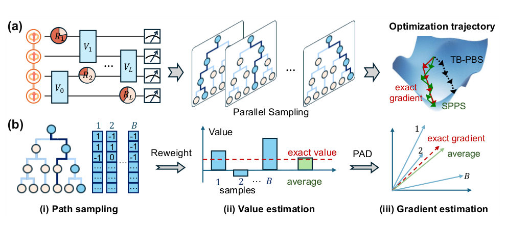
<figcaption class="paper-figure-caption"><b>Fig 1.</b> FIG. 1. Stochastic Pauli-path simulator for gradient estimation. (a) Overview of the SPPS framework. SPPS samples propagation paths from the full path space and combines them into unbiased estimators of both expectation values and gradients. The sampled paths are generated independently and can therefore be evaluated in parallel. (b) Core algorithm of SPPS. A group of sampled paths is first converted into an unbiased estimator of the target expectation value by importance reweighting. The same path-sampling mechanism is then coupled with path automatic differentiation to obtain unbiased stochastic gradient estimators.</figcaption>
</figure>
<figure class="paper-figure-card">
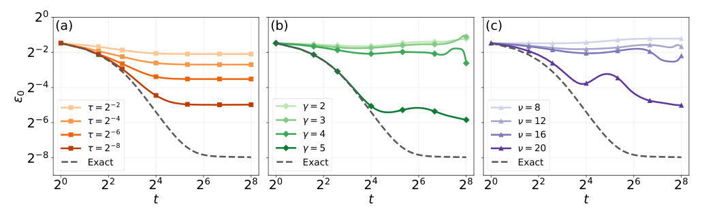
<figcaption class="paper-figure-caption"><b>Fig 2.</b> FIG. 2. Biased optimization trajectories of Tb-PBS methods. Subplots (a), (b), and (c) show the energy error ϵ0 versus the optimization step t of pre-training VQE for the 15-qubit TFIM, which are simulated by using CT-, WT-, and FT-PBS with different truncation thresholds τ, γ, and ν, respectively. The physical meanings of these thresholds are given in Sec. III. The dashed curve denotes the exact GD baseline obtained using PennyLane.</figcaption>
</figure>
<figure class="paper-figure-card">
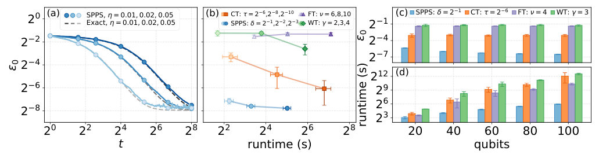
<figcaption class="paper-figure-caption"><b>Fig 3.</b> FIG. 3. Performance of different PBS methods for pre-training VQE on the TFIM. (a) Energy error ϵ0 versus optimization step t for SPPS-driven GD and exact GD on the 15-qubit TFIM with different learning rates. (b) Final energy error ϵ0 versus optimization runtime for SPPS and three Tb-PBS methods on the 15-qubit TFIM with different thresholds. (c,d) Final energy error and optimization runtime for system sizes from 20 to 100 qubits. Error bars indicate the standard deviation over 10 independent runs.</figcaption>
</figure>
<figure class="paper-figure-card">
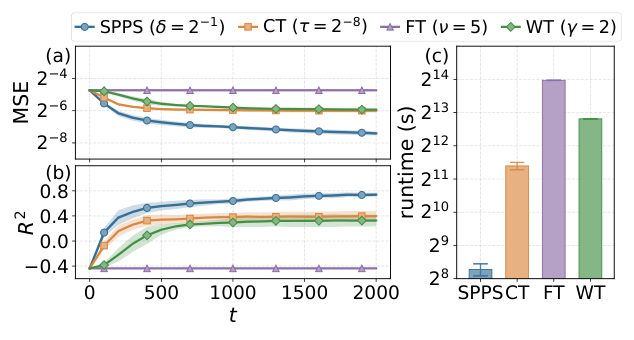
<figcaption class="paper-figure-caption"><b>Fig 4.</b> FIG. 4. Performance of different PBS methods for pre-training QNN on the 40-QML task. (a,b) Training MSE and test R2 score versus optimization step t for SPPS, CT-, FT-, and WT-PBS, respectively. (c) Optimization runtime of the four methods. We use δ = 2−1 for SPPS, τ = 2−8 for CT, ν = 5 for FT, and γ = 2 for WT. Error bars show the standard deviation over 5 independent runs.</figcaption>
</figure>
<figure class="paper-figure-card">
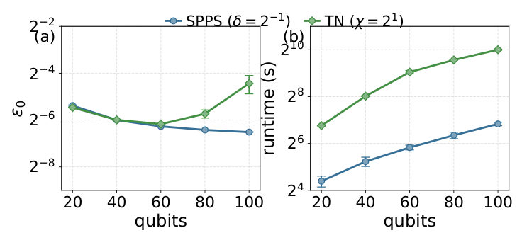
<figcaption class="paper-figure-caption"><b>Fig 5.</b> FIG. 5. SPPS versus tensor-network simulation on large-qubit VQE pre-training. We compare SPPS and a tensor-network baseline on the L = 6 TFIM VQE benchmark with n ∈{20, 40, 60, 80, 100} qubits. Figures (a) and (b) report the final normalized energy error ϵ0 and the optimization runtime, respectively. Error bars indicate the standard deviation over 10 independent runs.</figcaption>
</figure>
</div>

<p><strong>Summary.</strong> This paper introduces the Stochastic Pauli-path Simulator (SPPS), a novel computational framework designed to enable large-scale classical simulation of quantum circuits used in optimization. By using path sampling and automatic differentiation, SPPS provides unbiased stochastic gradient estimates necessary for variational quantum algorithms. This advances the utility of Pauli-based methods beyond simple forward state estimation into practical quantum optimization.</p>
<p><strong>Why it may be interesting.</strong> The development of scalable, gradient-aware classical simulators is crucial for benchmarking near-term quantum hardware performance in optimization regimes, providing a vital tool for theoretical study of NISQ algorithms.</p>
<details>
<summary>Detailed structure</summary>
<p><strong>Main problem.</strong> Developing a classical simulation method for large-scale quantum optimization tasks that can provide unbiased stochastic gradient estimates across optimization iterations.</p>
<p><strong>Main result.</strong> The proposed Stochastic Pauli-path Simulator (SPPS) yields unbiased gradient estimates with provable convergence guarantees, successfully extending Pauli-based simulation from simple forward estimation to complex, large-scale quantum optimization.</p>
<p><strong>Method.</strong> SPPS uses path sampling across the full Pauli-path space during Heisenberg evolution and employs importance reweighting combined with Path Automatic Differentiation (PAD) to derive unbiased stochastic gradient estimators for variational quantum algorithms.</p>
<p><strong>Model / system.</strong> The work targets optimizing expectation values of Pauli observables derived from general quantum circuits $U(	heta)$, applicable to tasks like VQE, state preparation, and QNNs. Benchmarks scale up to 100 qubits.</p>
<p><strong>Key observables.</strong> Expectation values ($  ext{Tr}[O
ho]$), gradients ($
abla C( heta)$), final normalized energy error ($\epsilon_0$), and optimization runtime.</p>
<p><strong>Important parameters / regimes.</strong> Circuit depth ($L$), number of qubits ($n \le 100$), sampling-smoothing parameter ($eta_a$), and the required convergence tolerance ($\epsilon$).</p>
<p><strong>Assumptions / limitations.</strong> The analysis assumes independence of gradient estimators constructed from independent batches, and the method relies on statistical averaging over many samples for error reduction.</p>
<p><strong>Figures summary.</strong> Figures compare SPPS performance against tensor-network simulation across various qubit counts (up to 100) for VQE benchmarks, showing favorable error-runtime trade-offs. Other figures detail the effect of circuit depth and sampling parameters on convergence fidelity.</p>
<p><strong>Paper structure.</strong> The paper first introduces the limitation of prior Pauli-based methods in optimization. It then details the SPPS framework (sampling, reweighting, PAD) to achieve unbiased gradients. Theoretical sections provide convergence guarantees for Gradient Descent using these stochastic estimators. Finally, extensive benchmarks validate SPPS on VQE and state preparation tasks.</p>
</details>
<details>
<summary>Abstract</summary>
<p>Pauli-based simulators offer a promising route to large-scale classical simulation of quantum circuits in the low-magic regime. Yet their applicability remains largely limited to forward simulation, making them inadequate for optimization-driven quantum tasks such as variational state preparation and parameter initialization. Existing approaches either lack native support for gradient-based optimization or suffer from severe gradient bias. Here we propose the stochastic Pauli-path simulator (SPPS), a computational framework for large-scale quantum optimization that enables unbiased stochastic gradient estimation via Pauli-path sampling across optimization iterations. Our theoretical analysis shows that the proposed simulator yields unbiased gradient estimates and admits provable convergence guarantees. We systematically evaluate our proposal, including quantum eigensolver benchmarks with up to 100 qubits and quantum neural network benchmarks with up to 40 qubits. Across these tasks, SPPS faithfully tracks optimization dynamics, converges within minutes, and broadens the role of Pauli-based simulation from forward estimation to large-scale quantum optimization.</p>
</details>
<p><sub><a href="#top">↑ back to top</a></sub></p>

<p><a id="paper-2607.18099"></a></p>
<h3 id="study-of-ordering-in-mocrtimath1452mathalmath1453math-refractory-high-entropy-alloys-using-machine-learning-interatomic-potential"><a href="http://arxiv.org/abs/2607.18099v1">Study of ordering in (MoCrTi)$_{100-x}$Al$_x$ refractory high-entropy alloys using machine learning interatomic potential</a></h3>
<p><strong>Authors:</strong> Jiyao Zhang, Klemens Lechner, Markus Maßwohl, Petra Spoerk-Erdely, David Holec<br>
<strong>Type:</strong> theory · <strong>Category:</strong> disordered systems and neural networks · <strong>PDF:</strong> <a href="https://arxiv.org/pdf/2607.18099v1">https://arxiv.org/pdf/2607.18099v1</a><br>
<strong>Analysis basis:</strong> full PDF text, analyzed in chunks
<strong>Topic relevance:</strong> <code>methods for driven-dissipative</code> <strong>1/5</strong></p>
<div class="figure-strip-hint">↔ Scroll figures horizontally</div>
<div class="paper-figures-scroll">
<figure class="paper-figure-card">
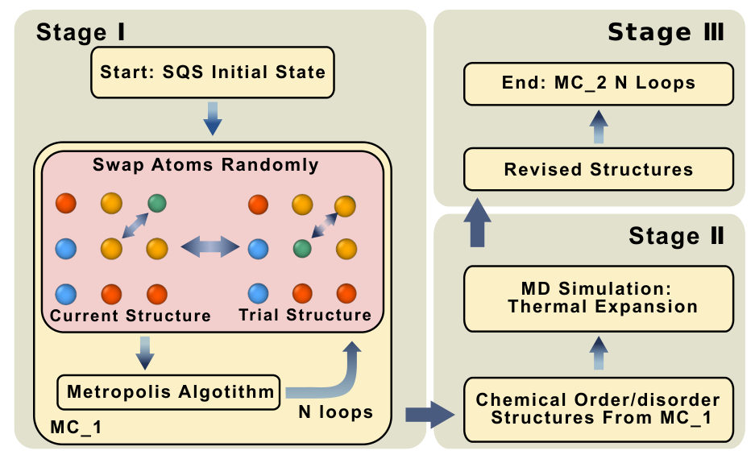
<figcaption class="paper-figure-caption"><b>Fig 1.</b> Figure 1: The workflow of hybrid MC/MD simulations. For a detailed explanation of individual stages, see the text.</figcaption>
</figure>
<figure class="paper-figure-card">
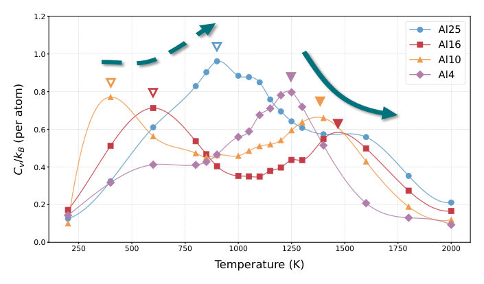
<figcaption class="paper-figure-caption"><b>Fig 2.</b> Figure 3: Heat capacity per atom versus temperature for four alloy compositions: Al25 (blue circles), Al16 (red squares), Al10 (orange triangles), and Al4 (purple rhombus). In the figure, hollow triangles and dashed arrows indicate the position and shift of the low-temperature peaks, respectively; solid triangles and solid arrows indicate the position and shift of the high-temperature peaks, respectively.</figcaption>
</figure>
<figure class="paper-figure-card">
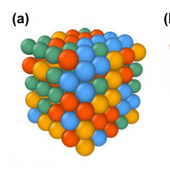
<figcaption class="paper-figure-caption"><b>Fig 3.</b> Figure 4: Snapshots from MC simulations of the Al25 alloy: (a) initial SQS state, (b) equilibrated ordered structure at 200 K, (c) equilibrated random structure at 2000 K.</figcaption>
</figure>
<figure class="paper-figure-card">
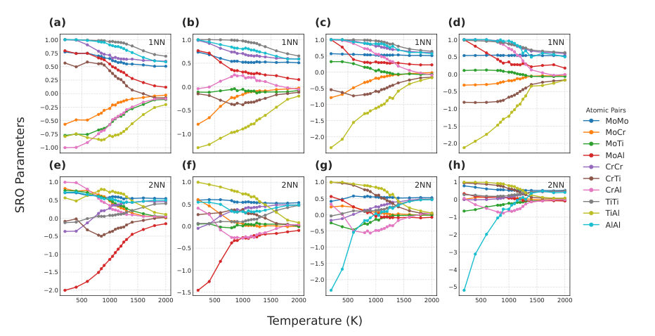
<figcaption class="paper-figure-caption"><b>Fig 4.</b> Figure 5: Temperature dependence of the SRO parameters in the 1NN and 2NN shells for RHEAs: (a, e) Al25, (b, f) Al16, (c, g) Al10, and (d, h) Al4.</figcaption>
</figure>
<figure class="paper-figure-card">
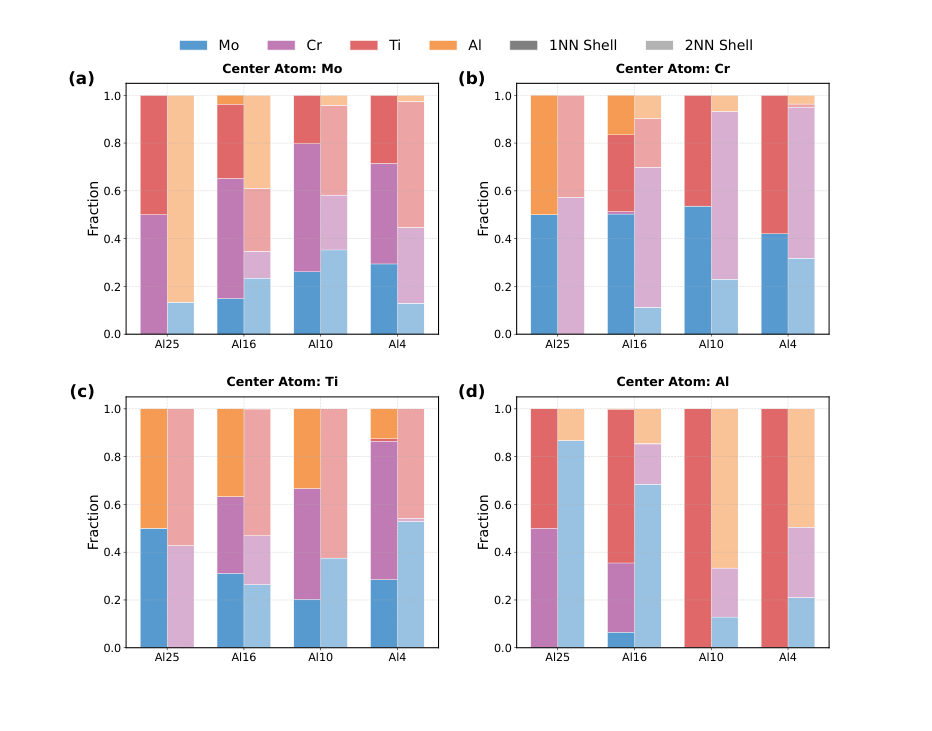
<figcaption class="paper-figure-caption"><b>Fig 5.</b> Figure 6: Average atomic fractions in the 1NN and 2NN shells around center atoms of (a) Mo, (b) Cr, (c) Ti, and (d) Al in ordered configurations at 200 K. The left (fully opaque) bars represent the 1NN shell, while the right (semi-transparent) bars correspond to the 2NN shell.</figcaption>
</figure>
</div>

<p><strong>Summary.</strong> This work investigates how chemical ordering affects the properties of refractory high-entropy alloys using sophisticated simulations powered by machine learning interatomic potentials. The study reveals that compositional changes lead to distinct order-disorder transitions and that structural ordering significantly boosts mechanical stiffness, peaking at a specific composition ($    ext{Al}_{10}$). This provides fundamental design rules for developing robust high-temperature materials.</p>
<p><strong>Why it may be interesting.</strong> While focused on condensed matter alloys, the methodology heavily relies on advanced machine learning potentials (uMLIPs) to model complex many-body interactions in disordered systems, which is a key theme in ML-physics.</p>
<details>
<summary>Detailed structure</summary>
<p><strong>Main problem.</strong> The study aims to understand the thermodynamic mechanisms governing chemical ordering in refractory high-entropy alloys (RHEAs) to optimize their performance for high-temperature applications.</p>
<p><strong>Main result.</strong> Chemical ordering significantly enhances the elastic constants and moduli of these alloys, exhibiting a non-monotonic dependence that peaks at specific compositions due to optimized stiff atomic pairs.</p>
<p><strong>Method.</strong> The research employs hybrid Monte Carlo (MC) and Molecular Dynamics (MD) simulations utilizing a universal Machine Learning Interatomic Potential (uMLIP).</p>
<p><strong>Model / system.</strong> The physical system is the $    ext{(MoCrTi)}_{100-x}   ext{Al}_x$ refractory high-entropy alloy. The modeling relies on advanced computational techniques, including uMLIPs and simulations tracking structural evolution.</p>
<p><strong>Key observables.</strong> Heat capacities ($C_V$), Short-Range Order (SRO) parameters (Warren-Cowley), elastic constants ($C_{11}, C_{12}, C_{44}$), and bulk/shear moduli.</p>
<p><strong>Important parameters / regimes.</strong> Al concentration ($x$) ranging from 0 to 0.25; Temperature ($T$); Pair stiffness ($k$).</p>
<p><strong>Assumptions / limitations.</strong> The analysis assumes that the mechanical response is strongly coupled with the degree of chemical ordering, and calculations are performed using uMLIP potentials.</p>
<p><strong>Figures summary.</strong> Figures illustrate the workflow diagram of MC/MD simulations; $C_V$ vs. Temperature profiles show distinct single or bimodal transition behaviors across compositions; elastic moduli plots demonstrate the non-monotonic peak in stiffness at $    ext{Al}_{10}$.</p>
<p><strong>Paper structure.</strong> The paper follows a structure detailing the simulation workflow (MC equilibration, NPT MD), analyzing thermodynamic transitions via $C_V$ and SRO parameters, and finally correlating these ordering states with measurable mechanical properties.</p>
</details>
<details>
<summary>Abstract</summary>
<p>Refractory high-entropy alloys have emerged as promising candidates for high-temperature applications due to their exceptional mechanical properties. Understanding the thermodynamic mechanisms underlying chemical ordering in these complex systems is critical for optimizing their performance. In this work, by utilizing a universal machine learning interatomic potential with hybrid Monte Carlo and molecular dynamics simulations, the temperature-dependent thermodynamics and mechanical properties of (MoCrTi)(100-x)Alx system have been investigated. The heat capacities and short-range order parameters reveal distinct order-disorder transition behaviors. While the Mo25Cr25Ti25Al25 and Mo32Cr32Ti32Al4 alloys exhibit a single transition dominated by the synergistic ordering of B2-type atomic pairs, the Mo28Cr28Ti28Al16 and Mo30Cr30Ti30Al10 alloys display two separate transitions: a low-temperature stage driven by specific pairs (Mo-Al in Mo28Cr28Ti28Al16; Al-Al in Mo30Cr30Ti30Al10) and a high-temperature stage governed by the remaining pairs. Structural analysis indicates that in the low-temperature ordered B2 phase, Mo and Al share one sublattice while Cr and Ti share the other. Furthermore, the relationship between ordering and mechanical stiffness has been identified. Ordering significantly enhances the elastic constants and moduli, and gives rise to a non-monotonic compositional dependence. Unlike random solid solutions, where stiffness increases monotonically with decreasing Al content, ordered configurations exhibit a non-monotonic trend, peaking at the Mo30Cr30Ti30Al10 alloy. This enhancement is attributed to an optimized population of stiff atomic pairs induced by strong short-range order. These findings provide fundamental insights into the interplay between compositions, chemical ordering, and mechanical performance, offering guidance for the design of refractory high-entropy alloys.</p>
</details>
<p><sub><a href="#top">↑ back to top</a></sub></p>

<p><a id="paper-2607.16857"></a></p>
<h3 id="universal-parent-hamiltonians-for-adiabatic-warm-starts"><a href="http://arxiv.org/abs/2607.16857v1">Universal Parent Hamiltonians for Adiabatic Warm Starts</a></h3>
<p><strong>Authors:</strong> Feng Qian, Peter J. Love<br>
<strong>Type:</strong> theory · <strong>Category:</strong> quantum information and computing · <strong>PDF:</strong> <a href="https://arxiv.org/pdf/2607.16857v1">https://arxiv.org/pdf/2607.16857v1</a><br>
<strong>Analysis basis:</strong> full PDF text, analyzed in chunks
<strong>Topic relevance:</strong> <code>analog quantum simulation</code> <strong>1/5</strong></p>
<div class="figure-strip-hint">↔ Scroll figures horizontally</div>
<div class="paper-figures-scroll">
<figure class="paper-figure-card">
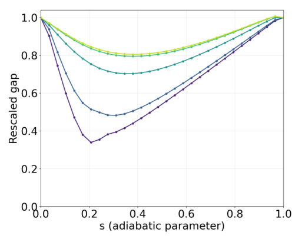
<figcaption class="paper-figure-caption"><b>Fig 1.</b> FIG. 1. Rescaled spectral gap along the adiabatic path, for several values of the warm-start parameter g. From low- est to highest, curves correspond to warm-start values g = −0.9 (bottom, dark purple), −0.5 (blue), −0.1 (teal), −0.01 (green), and −0.001 (top, yellow), with η = 1/√1 −g.As g →0−the minimum gap grows from ∆min ≈0.34 (at s ≈0.21) to ≈0.81 (at s ≈0.38).</figcaption>
</figure>
<figure class="paper-figure-card">
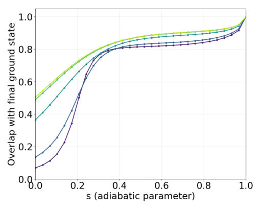
<figcaption class="paper-figure-caption"><b>Fig 2.</b> FIG. 2. Ground-state overlap with the target GHZ state along the adiabatic path, for several values of the warm- start parameter g. Along the interpolation H(s) = (1 − s) Hclock/∆clock + s Hfinal/∆final (s ∈[0, 1], each endpoint normalized by its spectral gap ∆), we plot the squared fi- delity |⟨ψ0(s)|ψg⟩|2 between the instantaneous ground state and the tensor product of uniform superposition and target GHZ state |ψGHZ⟩= |ψ0(1)⟩. Curves correspond to warm- start values g = −0.9 (dark purple), −0.5 (blue), −0.1 (teal), −0.01 (green), and −0.001 (yellow), with η = 1/√1 −g. The fidelity reaches unity at s = 1 for all g; the initial overlap at s = 0 falls from ≈0.51 (g = −0.001) to ≈0.07 (g =...</figcaption>
</figure>
<figure class="paper-figure-card">
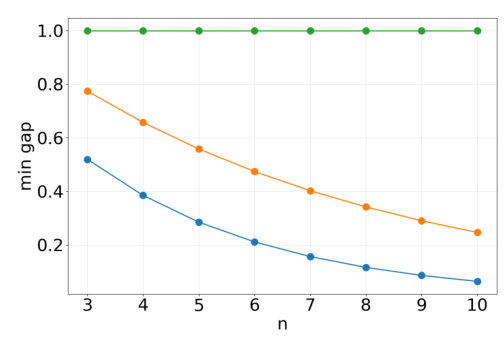
<figcaption class="paper-figure-caption"><b>Fig 3.</b> FIG. 3. Minimum spectral gap of the warm-start adiabatic interpolation versus the number of system qubits n, for three values of the Z2 matrix-product-state warm-start coupling g. We plot ∆min = mins[E1(s) −E0(s)]. Curves correspond to g = −1 (bottom, blue), g = −0.5 (middle, orange), and g = 0 (top, green), with η = 1/√1 −g. The minimum gap decreases with n for g = −1 and g = −0.5 (to ∆min ≈0.06 and ≈0.25 at n = 10), whereas g →0 (warm start approaching the GHZ target) keeps ∆min = 1.</figcaption>
</figure>
<figure class="paper-figure-card">
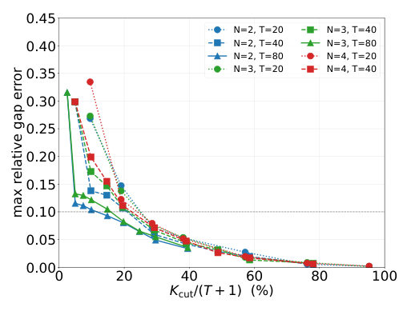
<figcaption class="paper-figure-caption"><b>Fig 4.</b> FIG. 4. Maximum relative error of the adiabatic spectral gap under momentum-space truncation, as a function of the retained-mode fraction kcut/(T + 1). Curves are shown for system size n ∈{2, 3, 4} and clock length T ∈{20, 40, 80}. The dashed line marks the 10% relative-error level.</figcaption>
</figure>
<figure class="paper-figure-card">
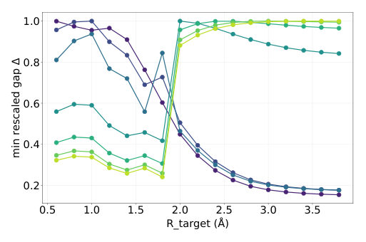
<figcaption class="paper-figure-caption"><b>Fig 5.</b> FIG. 6. H6 STO-3G—minimum rescaled adiabatic gap each endpoint normalized to unit gap. Each curve uses a different warm-start geometry, in viridis color order: Rinit = 0.7 (dark purple), 1.0 (indigo), 1.5 (blue),2.0 (teal), 2.5 (green), 3.0 (yellow-green), and 3.5 ˚A (yellow). The gap stays open when Rinit and Rtarget lie in the same electronic phase and collapses across the phase boundary near R ≈1.9 ˚A.</figcaption>
</figure>
</div>

<p><strong>Summary.</strong> This paper introduces the Universal Parent Hamiltonian Adiabatic Warm Start (UPHAWS) protocol to solve the problem of initializing quantum simulations near quantum phase transitions. By selecting an initial Hamiltonian whose ground state shares the target's quantum phase, it prevents the minimum spectral gap from collapsing exponentially with system size. This significantly improves the feasibility and scaling of adiabatic state preparation for complex many-body systems.</p>
<p><strong>Why it may be interesting.</strong> This work directly addresses resource estimation for quantum computation by providing a concrete method to circumvent spectral gap closing issues inherent in adiabatic state preparation when crossing phase boundaries.</p>
<details>
<summary>Detailed structure</summary>
<p><strong>Main problem.</strong> The primary challenge addressed is efficiently preparing an initial quantum state with high overlap to accurately estimate the ground state properties of a target Hamiltonian using Quantum Phase Estimation (QPE).</p>
<p><strong>Main result.</strong> The authors propose Universal Parent Hamiltonians for Adiabatic Warm Starts (UPHAWS), demonstrating that initializing adiabatic state preparation with a parent Hamiltonian whose ground state is in the same quantum phase as the target can significantly improve the minimum spectral gap.</p>
<p><strong>Method.</strong> The work develops a theoretical protocol using 'parent Hamiltonians' and analyzes the required time scaling ($T \propto 1/\Delta^2$) for Adiabatic State Preparation (ASP) across quantum phase transitions.</p>
<p><strong>Model / system.</strong> The framework is tested on general quantum systems, specifically benchmarking against an MPS family interpolating to a GHZ Hamiltonian and the linear H6 chain undergoing bond stretching.</p>
<p><strong>Key observables.</strong> Minimum spectral gap ($\Delta$), Adiabatic fidelity ($F(t)$), and the initial state overlap $\langle \Upsilon_0|\Psi_0
angle$.</p>
<p><strong>Important parameters / regimes.</strong> The system size (N) and the separation between quantum phases, which dictates whether the minimum gap shrinks exponentially.</p>
<p><strong>Assumptions / limitations.</strong> It is assumed that choosing an initial Hamiltonian whose ground state resides in the same quantum phase as the target allows for efficient warm-starting of ASP.</p>
<p><strong>Figures summary.</strong> The figures compare the minimum rescaled adiabatic gap for different initialization geometries (e.g., localized vs. delocalized starts) across bond stretching, showing that appropriate initial states maintain a large gap where others collapse near phase boundaries.</p>
<p><strong>Paper structure.</strong> The paper establishes the problem of state preparation bottlenecks in QPE, introduces the UPHAWS protocol using parent Hamiltonians like the Feynman–Kitaev clock Hamiltonian, and validates this approach through detailed benchmarks on specific physical models (MPS/H6 chain).</p>
</details>
<details>
<summary>Abstract</summary>
<p>Computing the ground state properties of quantum systems is an important potential application of quantum computing. The success probability of quantum phase estimation approaches to ground state problems is proportional to the overlap of the input state with the ground state. Local ansatz state approaches suffer from the orthogonality catastrophe, whereas adiabatic state preparation (ASP) can prepare good approximations with a cost growing with the inverse square of the minimum spectral gap along the adiabatic path. When the initial and target Hamiltonians lie in quantum phases separated by a first order phase transition, the minimum spectral gap along the adiabatic path becomes exponentially small as a function of system size. We pursue a solution to this problem based on choosing an initial Hamiltonian for adiabatic state preparation whose ground state lies in the same quantum phase as the target ground state. We develop a protocol for universal adiabatic warm starts with universal parent Hamiltonians (UPHAWS) that can initialize ASP in any state whose preparation circuit is known. We use the Feynman--Kitaev clock Hamiltonian as a universal parent Hamiltonian, for preparation circuits with and without mid circuit measurement. We benchmark the framework on a $\mathbb{Z}_2$-symmetric matrix product state (MPS) family interpolating to a target GHZ Hamiltonian, and on the linear $H_6$ chain under symmetric bond stretching. For the $H_6$ system a bond-dimension-$4$ matrix product state warm-start increases the minimum gap on the adiabatic path by a factor of two relative to the Hartree-Fock initialization. To perform these classical benchmark simulations we develop a momentum-space truncation of the adiabatic Hamiltonian that may be of independent interest.</p>
</details>
<p><sub><a href="#top">↑ back to top</a></sub></p>
<h2 id="other-papers-12">Other papers (12)</h2>
<p><em>Papers from primary archives without highlighted authors or any topic match. Click to expand.</em></p>
<details>
<summary>Show other papers</summary>

<p><a id="paper-2607.16944"></a></p>
<h3 id="bound-scattering-and-resonance-states-of-the-symmetric-woods-saxon-potential-in-dunkl-quantum-mechanic"><a href="http://arxiv.org/abs/2607.16944v1">Bound, Scattering, and Resonance States of the Symmetric Woods--Saxon Potential in Dunkl Quantum Mechanic</a></h3>
<p><strong>Authors:</strong> Mebarek Heddar, Can Ertuğay, Bekir Can Lütfüoğlu<br>
<strong>Type:</strong> theory · <strong>Category:</strong> other · <strong>PDF:</strong> <a href="https://arxiv.org/pdf/2607.16944v1">https://arxiv.org/pdf/2607.16944v1</a><br>
<strong>Analysis basis:</strong> full PDF text, analyzed in chunks</p>
<div class="figure-strip-hint">↔ Scroll figures horizontally</div>
<div class="paper-figures-scroll">
<figure class="paper-figure-card">
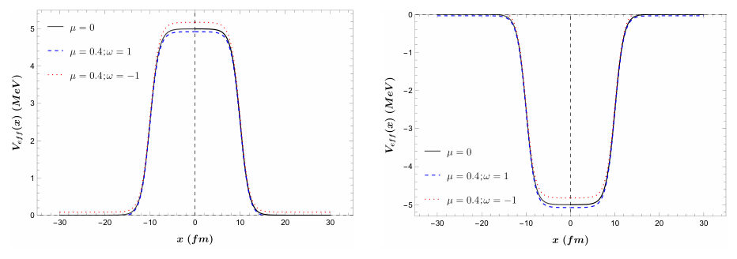
<figcaption class="paper-figure-caption"><b>Fig 1.</b> Figure 1: Approximate effective sWS potentials obtained using the Pekeris-type approximation for representative values of the Dunkl deformation parameter µ in the two reflection sectors (ω = ±1). Panels (a) and (b) correspond to the barrier and well configurations, respectively. The calculations were performed using V0 = 5 MeV, a = 1 fm−1, L = 10 fm, mc2 = 940 MeV, and ℏc = 197.329 MeV fm.</figcaption>
</figure>
<figure class="paper-figure-card">
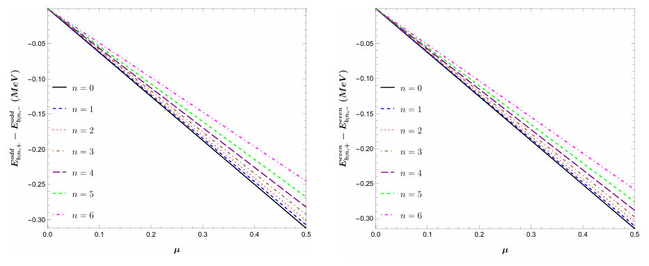
<figcaption class="paper-figure-caption"><b>Fig 2.</b> Figure 2: Variation of the bound-state energy difference ∆Eb,n = Eb,n,+ −Eb,n,−as a function of the Dunkl deformation parameter µ for the first three bound states. Panels (a) and (b) correspond to the odd- and even-parity solutions, respectively.</figcaption>
</figure>
<figure class="paper-figure-card">
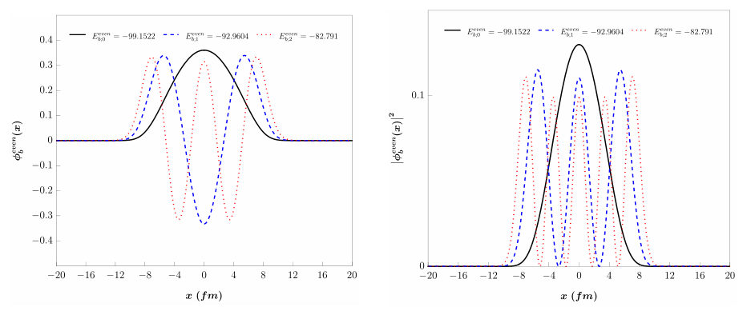
<figcaption class="paper-figure-caption"><b>Fig 3.</b> Figure 3: Normalized bound-state eigenfunctions and the corresponding probability densities for the effective sWS potential for µ = 0.4 and ω = 1. Panels (a) and (b) correspond to the odd-parity eigenfunctions and their probability densities, respectively, whereas panels (c) and (d) show the corresponding even-parity results.</figcaption>
</figure>
<figure class="paper-figure-card">
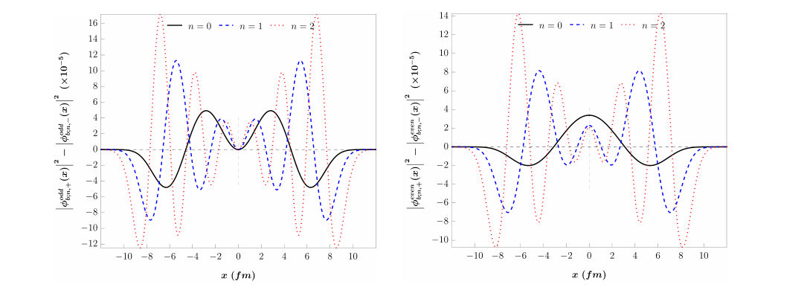
<figcaption class="paper-figure-caption"><b>Fig 4.</b> Figure 4: Difference between the probability densities corresponding to the reflection eigenvalues ω = +1 and ω = −1 for the first five bound states. Panels (a) and (b) correspond to the odd- and even-parity solutions, respectively.</figcaption>
</figure>
<figure class="paper-figure-card">
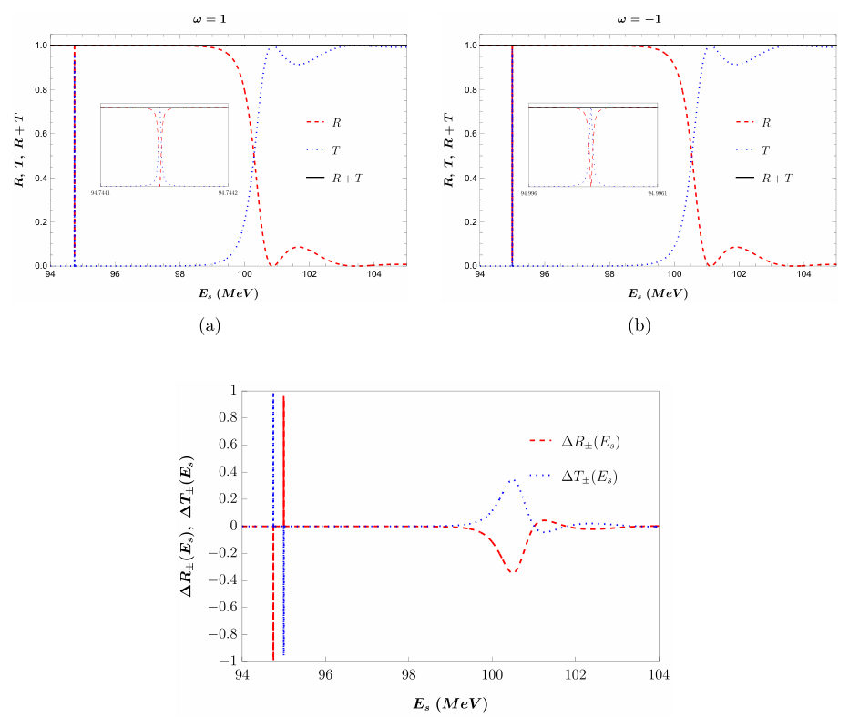
<figcaption class="paper-figure-caption"><b>Fig 5.</b> Figure 5: Reflection and transmission coefficients as functions of the scattering energy for the effective Dunkl–Woods–Saxon barrier for µ = 0.4. Panels (a) and (b) display the reflection and transmission coefficients for the reflection sectors ω = +1 and ω = −1, respectively. The vertical dashed line indicates the barrier height V0. Panel (c) presents the differences ∆R(Es) = R+(Es)−R−(Es) and ∆T(Es) = T+(Es)−T−(Es), demonstrating the influence of the reflection sector on the scattering properties.</figcaption>
</figure>
</div>
<p><strong>Summary.</strong> This paper develops a novel, unified analytical theory to describe bound, scattering, and resonance states for the Woods--Saxon potential under Dunkl quantum mechanics. By using a Pekeris approximation, the authors show that the deformation parameter $\mu$ causes measurable splitting in energy spectra and modifies tunneling behavior. The results confirm the formalism's consistency by recovering standard physics when $\mu 	o 0$.</p>
<p><strong>Why it may be interesting.</strong> This work is highly relevant as it extends standard quantum mechanics models (like those used in nuclear physics) into the realm of non-standard quantum deformations (Dunkl mechanics), providing a unified theoretical framework for spectral analysis.</p>
<details>
<summary>Detailed structure</summary>
<p><strong>Main problem.</strong> The paper aims to provide the first unified analytical description for bound, scattering, and Gamow resonance states associated with the one-dimensional symmetric Woods--Saxon potential when analyzed within the framework of Dunkl quantum mechanics.</p>
<p><strong>Main result.</strong> The Dunkl deformation fundamentally modifies spectral properties by causing a reflection-sector-dependent splitting of the bound-state spectrum and generating long-lived metastable states characterized by narrow transmission peaks.</p>
<p><strong>Method.</strong> The authors employ a Pekeris-type approximation to transform the complex differential equation into a solvable hypergeometric form, allowing for analytical solutions across different physical regimes.</p>
<p><strong>Model / system.</strong> The system models a particle interacting with a one-dimensional symmetric Woods--Saxon potential. The dynamics are governed by the Dunkl Hamiltonian, which introduces a reflection-sector-dependent inverse-square interaction term.</p>
<p><strong>Key observables.</strong> Bound state energies ($E_{	ext{odd/even}}^{b,n}$), scattering amplitudes (Reflection $R$ and Transmission $T$), complex resonance energies ($E_m = E_r - iE_i$), decay widths ($\Gamma$), and lifetimes ($   au$).</p>
<p><strong>Important parameters / regimes.</strong> Dunkl deformation parameter ($\mu > -1/2$), potential parameters ($\sigma, a, L$), and the reflection sector index ($\omega = \pm 1$).</p>
<p><strong>Assumptions / limitations.</strong> The analysis relies on the Pekeris-type approximation to handle the inverse-square term generated by the Dunkl derivative operator. The study is restricted to reflection-symmetric potentials.</p>
<p><strong>Figures summary.</strong> Figure 5 illustrates how $R$ and $T$ vary with energy for $\omega=\pm 1$, highlighting resonance structures. Figure 6 visualizes $R$ and $T$ dependence on the Dunkl parameter ($\mu$) and energy ($E_s$).</p>
<p><strong>Paper structure.</strong> The paper first introduces the problem setup using the Dunkl Hamiltonian, then applies a Pekeris-type approximation to reduce it to a hypergeometric equation. It proceeds to derive analytical solutions for bound states, followed by analyzing scattering coefficients and finally determining resonance properties via complex energy continuation.</p>
</details>
<details>
<summary>Abstract</summary>
<p>We present the first unified analytical description of the bound, scattering, and Gamow (metastable) resonance states of the one-dimensional symmetric Woods--Saxon potential within the framework of Dunkl quantum mechanics, establishing a single analytical framework that consistently describes all physically relevant spectral regimes. The Dunkl deformation introduces a reflection-sector-dependent inverse-square interaction that precludes a direct analytical treatment of the corresponding Schrödinger equation. By employing a Pekeris-type approximation, the problem is transformed into a hypergeometric differential equation, enabling the derivation of analytical wave functions, bound-state quantization conditions, scattering amplitudes, and Gamow resonance solutions within a unified formalism. The results reveal that the Dunkl deformation fundamentally modifies the system's spectral properties by generating a reflection-sector-dependent splitting of the bound-state spectrum, along with quantitative changes in the reflection and transmission probabilities. The narrow transmission peaks are shown to originate from long-lived Gamow resonance states, whose complex energies, decay widths, and lifetimes are determined through analytic continuation into the complex-energy plane. In the limit of vanishing Dunkl deformation, the conventional Woods--Saxon results are fully recovered, confirming the consistency of the proposed formalism. The proposed analytical framework provides a versatile approach for investigating finite-range potentials in Dunkl quantum mechanics and opens the way to systematic studies of reflection-deformed quantum systems beyond the Woods--Saxon interaction.</p>
</details>
<p><sub><a href="#top">↑ back to top</a></sub></p>

<p><a id="paper-2607.18126"></a></p>
<h3 id="cutbackdoor-a-circuit-cut-triggered-backdoor-attack-on-variational-quantum-algorithms"><a href="http://arxiv.org/abs/2607.18126v1">CutBackdoor: A Circuit Cut Triggered Backdoor Attack on Variational Quantum Algorithms</a></h3>
<p><strong>Authors:</strong> Ahatesham Bhuiyan, Hoang Ngo, Cheng Chu, Qian Lou, Lei Jiang, My T. Thai, Mengxin Zheng<br>
<strong>Type:</strong> theory · <strong>Category:</strong> quantum information and computing · <strong>PDF:</strong> <a href="https://arxiv.org/pdf/2607.18126v1">https://arxiv.org/pdf/2607.18126v1</a><br>
<strong>Analysis basis:</strong> full PDF text, analyzed in chunks</p>
<div class="figure-strip-hint">↔ Scroll figures horizontally</div>
<div class="paper-figures-scroll">
<figure class="paper-figure-card">
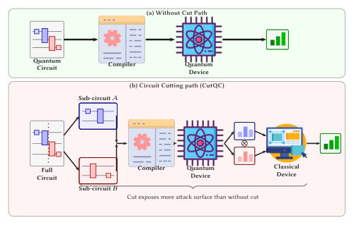
<figcaption class="paper-figure-caption"><b>Fig 1.</b> Figure 1: Circuit cutting (b) exposes a larger attack surface than the standard execution path (a).</figcaption>
</figure>
<figure class="paper-figure-card">
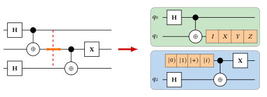
<figcaption class="paper-figure-caption"><b>Fig 2.</b> Figure 2: Circuit cutting example: a 3-qubit circuit is split into two subcircuits via a single wire cut, executed independently, and reconstructed from 4𝐾Pauli-basis branch outputs.</figcaption>
</figure>
<figure class="paper-figure-card">
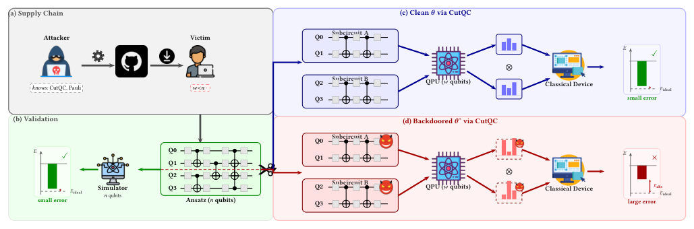
<figcaption class="paper-figure-caption"><b>Fig 3.</b> Figure 3: CutBackdoor threat model. (a) Supply chain: an attacker uploads poisoned VQA parameters 𝜽∗, downloaded by a victim whose hardware capacity 𝑤is smaller than the circuit’s qubit requirement 𝑛(𝑤&lt; 𝑛). (b) Full-circuit validation: running on 𝑛qubits without cutting yields energy close to the ideal value, so 𝜽∗passes inspection. (c) CutQC with clean parameters: cut-path reconstruction stays close to the ideal value under finite shots. (d) CutQC with 𝜽∗: the same pipeline yields a large cut-path deviation 𝐸abs ≫0, activating CutBackdoor.</figcaption>
</figure>
<figure class="paper-figure-card">
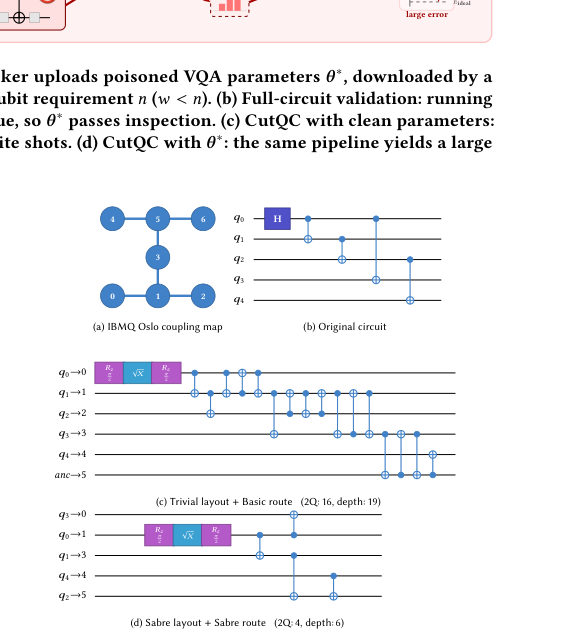
<figcaption class="paper-figure-caption"><b>Fig 4.</b> Figure 4: Comparison of transpilation strategies on the IBMQ_Oslo device. (a) Coupling map of the 7-qubit heavy-hex topology. (b) Original logical circuit. (c) Trivial initial layout with basic routing yields 16 two-qubit gates at depth 19. (d) Sabre layout with Sabre routing yields only 4 two-qubit gates at depth 6.</figcaption>
</figure>
<figure class="paper-figure-card">
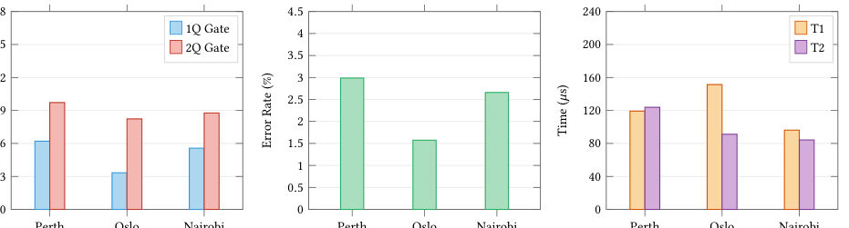
<figcaption class="paper-figure-caption"><b>Fig 5.</b> Figure 5: Noise characterization of the three 7-qubit IBMQ. Gate error rates (left), readout error rates (center), and coherence times (right) for IBMQ_Perth, IBMQ_Oslo, and IBMQ_Nairobi.</figcaption>
</figure>
</div>
<p><strong>Summary.</strong> This paper introduces CutBackdoor, a novel backdoor attack targeting Variational Quantum Algorithms that are forced to use circuit cutting due to limited hardware qubits. The attack poisons parameters so that while standard simulation remains clean, the necessary reconstruction process during execution causes a measurable and significant energy amplification error. This highlights a critical supply-chain security risk in deploying VQAs on real quantum devices.</p>
<p><strong>Why it may be interesting.</strong> It directly addresses the practical security vulnerabilities of near-term quantum computing hardware by targeting the necessary execution overhead (circuit cutting) rather than just the algorithm itself. This has implications for secure deployment protocols in quantum computation.</p>
<details>
<summary>Detailed structure</summary>
<p><strong>Main problem.</strong> The paper addresses supply-chain security risks in Variational Quantum Algorithms (VQAs) that arise from using pre-trained parameters and the necessity of quantum circuit cutting on limited hardware.</p>
<p><strong>Main result.</strong> CutBackdoor is presented as a novel backdoor attack that activates when resource constraints force the use of circuit cutting, causing significant energy amplification ($1.3	imes$ to $2.9	imes$) in the reconstructed path error without modifying the original parameters.</p>
<p><strong>Method.</strong> The authors introduce CutBackdoor, which poisons VQA parameters such that while full-circuit validation remains accurate, the reconstruction error during cut-path execution substantially increases.</p>
<p><strong>Model / system.</strong> The system involves Variational Quantum Algorithms (VQAs) applied to problems like quantum chemistry (VQE) and optimization (QAOA). The core mechanism relies on circuit cutting, where large circuits are decomposed into smaller subcircuits whose outputs must be classically reconstructed.</p>
<p><strong>Key observables.</strong> Cut-path reconstruction error vs. full-circuit validation performance; energy amplification of the attack effect ($1.3	imes$ to $2.9	imes$).</p>
<p><strong>Important parameters / regimes.</strong> Shot budgets, qubit capacity mismatch (the trigger), and the structure of the cut path.</p>
<p><strong>Assumptions / limitations.</strong> The attacker assumes the victim follows the standard CutQC workflow with default compilation settings; prior attacks are assumed to either be detectable or rely on device-specific noise.</p>
<p><strong>Figures summary.</strong> Figure 1 illustrates circuit cutting, showing that the process exposes a larger attack surface compared to standard execution. Figure 2 details a specific example of splitting and reconstructing a subcircuit using Pauli basis outputs.</p>
<p><strong>Paper structure.</strong> The paper introduces the problem (VQA deployment limitations), proposes CutBackdoor as a novel backdoor leveraging circuit cutting as a trigger, provides theoretical analysis, and empirically validates the attack across multiple VQA benchmarks on IBM quantum backends.</p>
</details>
<details>
<summary>Abstract</summary>
<p>Variational Quantum Algorithms (VQAs) are a leading paradigm for near-term quantum computing, combining parameterized quantum circuits with classical optimization across quantum chemistry, combinatorial optimization, and quantum machine learning. Since real-world VQA deployments routinely require circuits that exceed available hardware capacity, quantum circuit cutting has become an indispensable execution strategy, and pre-trained parameters are increasingly distributed through public repositories, introducing supply-chain security risks that have received little attention. Prior quantum backdoor attacks either introduce detectable circuit modifications or depend on device-specific noise, and none consider circuit cutting as an attack surface. We present CutBackdoor, the first parameter-supply-chain backdoor that uses cut circuit execution from CutQC as the deployment-time trigger against VQAs. Under noisy finite-shot circuit-cut execution, poisoned parameters preserve full-circuit validation performance while substantially increasing cut-path reconstruction error, without any circuit modification. The trigger activates when a resource-limited victim responds to a qubit-capacity mismatch by invoking the cutting workflow, requiring no attacker presence at deployment. We provide a theoretical analysis and empirically validate it across varying shot budgets. Evaluation across multiple VQA benchmarks on IBM quantum backends demonstrates cut-path energy amplification of $1.3\times$ to $2.9\times$ \revA{over clean baselines on the VQE and VQD benchmarks while maintaining small stealthiness error on the full-circuit path. The cut-path gap persists across the evaluated backends and cut placements under matched compilation; Zero-Noise Extrapolation provides only partial mitigation, and the diagonal-cost QAOA benchmark   delineates the attack's structural boundary</p>
</details>
<p><sub><a href="#top">↑ back to top</a></sub></p>

<p><a id="paper-2607.16541"></a></p>
<h3 id="efficient-exact-quantum-sampling-from-the-sun-wootters-distribution-for-optimal-polynomial-intersection"><a href="http://arxiv.org/abs/2607.16541v1">Efficient Exact Quantum Sampling from the Sun-Wootters Distribution for Optimal Polynomial Intersection</a></h3>
<p><strong>Authors:</strong> Sunghyeon Jo<br>
<strong>Type:</strong> theory · <strong>Category:</strong> quantum information and computing · <strong>PDF:</strong> <a href="https://arxiv.org/pdf/2607.16541v1">https://arxiv.org/pdf/2607.16541v1</a><br>
<strong>Analysis basis:</strong> full PDF text, analyzed in chunks</p>
<div class="figure-strip-hint">↔ Scroll figures horizontally</div>
<div class="paper-figures-scroll">
<figure class="paper-figure-card">
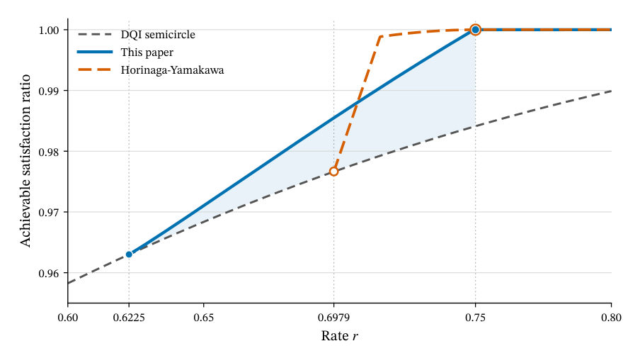
<figcaption class="paper-figure-caption"><b>Fig 1.</b> Figure 1: Asymptotic algorithmic satisfaction bounds in the balanced case. The curves show supremal boundary values. Blue markers identify the included rates 0.6225 and 3/4; orange rings identify the reported sufficient rates 0.6979 and 3/4 for Horinaga–Yamakawa, whose guarantees apply strictly to their right. At rates at least 3/4, this paper gives satisfaction 1 −o(1) with high probability, while Horinaga–Yamakawa give satisfaction 1 at every fixed rate strictly above 3/4.</figcaption>
</figure>
</div>
<p><strong>Summary.</strong> This paper develops a polynomial-time quantum algorithm to efficiently sample the Sun-Wootters distribution, which is crucial for solving Optimal Polynomial Intersection (OPI). By achieving this sampling capability, the authors prove that quantum computation offers strict worst-case improvements over classical bounds in structured optimization problems. The work establishes theoretical thresholds for when and how much better quantum algorithms can perform compared to known limits.</p>
<p><strong>Why it may be interesting.</strong> While highly theoretical, the development of efficient quantum samplers for complex distributions derived from coding theory has implications for simulating or analyzing structured quantum information processing tasks.</p>
<details>
<summary>Detailed structure</summary>
<p><strong>Main problem.</strong> The paper addresses finding efficient quantum algorithms for sampling from the Sun-Wootters distribution, which is relevant to solving the structured optimization problem known as Optimal Polynomial Intersection (OPI).</p>
<p><strong>Main result.</strong> It provides a bounded-error polynomial-time quantum sampler for this distribution, proving that it achieves strict worst-case improvements over classical benchmarks like the DQI semicircle law at specific rates.</p>
<p><strong>Method.</strong> The core method involves constructing the quantum state using Fourier analysis and amplitude amplification techniques, combined with deterministic complete list decoding to ensure coherent summation over error classes.</p>
<p><strong>Model / system.</strong> The problem is framed abstractly within coding theory and optimization (OPI) over finite prime fields ($\mathbb{F}_p$), utilizing concepts from quantum Fourier transforms and membership oracles rather than a specific physical Hamiltonian.</p>
<p><strong>Key observables.</strong> Satisfaction ratio of the OPI, which measures success; asymptotic rates ($r$) are key observables for comparing algorithmic performance against theoretical bounds.</p>
<p><strong>Important parameters / regimes.</strong> The limiting rate $r$, the dual Johnson radius, and error tolerance parameters ($\epsilon, \eta$) define the regimes where the quantum advantage is proven.</p>
<p><strong>Assumptions / limitations.</strong> The analysis assumes coherent membership-oracle access and that the OPI parameters satisfy specific conditions relative to the dual Johnson radius for the sampler to function correctly.</p>
<p><strong>Figures summary.</strong> Figure 1 compares asymptotic algorithmic bounds, marking key rates like $0.6225$ (the initial improvement threshold) and $3/4$ (the rate for near-perfect solutions).</p>
<p><strong>Paper structure.</strong> The paper builds analytically by first establishing the target distribution via Fourier analysis (Chunk 2), then developing the quantum sampling algorithm using amplitude amplification (Chunk 3), and finally proving the strict improvements and asymptotic perfection across various rates through rigorous bounding techniques (Chunks 1 &amp; 4).</p>
</details>
<details>
<summary>Abstract</summary>
<p>Optimal Polynomial Intersection (OPI) is a structured optimization problem for which Decoded Quantum Interferometry (DQI) attains a satisfaction guarantee governed by the semicircle law. Sun and Wootters recently showed that, for balanced OPI over prime fields, a Fourier-defined distribution $P_u$ gives a strict worst-case improvement from limiting rate $0.6225$ onward and asymptotically perfect solutions from rate $0.7496$ onward, and asked whether $P_u$ can be sampled efficiently. We answer this question for Reed--Solomon OPI parameters satisfying their exponent condition strictly below the dual Johnson radius. Under coherent membership-oracle access, we give a bounded-error polynomial-time quantum sampler for $P_u$. The ideal circuit samples $P_u$ exactly conditioned on success, while a finite-precision implementation achieves any prescribed inverse-polynomial total-variation error. Consequently, every fixed limiting rate $0.6225\le r<1$ admits a strict worst-case improvement over the DQI semicircle value, and every limiting rate $r\ge 3/4$ admits solutions of satisfaction $1-o(1)$ with high probability. The algorithm coherently sums the amplitudes of all low-weight errors in each syndrome class using deterministic complete list decoding. Complete Reed--Solomon list decoding and the Sun--Wootters denominator estimate make the list size and postselection overhead polynomial. In concurrent and independent work, Horinaga and Yamakawa obtain worst-case OPI algorithms over prime-power fields and exact satisfaction at every fixed rate strictly above $3/4$.</p>
</details>
<p><sub><a href="#top">↑ back to top</a></sub></p>

<p><a id="paper-2607.16996"></a></p>
<h3 id="encoding-choices-and-fault-tolerant-resource-estimates-for-digital-quantum-hamiltonian-descent"><a href="http://arxiv.org/abs/2607.16996v1">Encoding Choices and Fault-Tolerant Resource Estimates for Digital Quantum Hamiltonian Descent</a></h3>
<p><strong>Authors:</strong> Chenxu Liu, Meng Wang, Mingze Li, Muqing Zheng, Samuel Stein, Yousu Chen<br>
<strong>Type:</strong> theory · <strong>Category:</strong> quantum information and computing · <strong>PDF:</strong> <a href="https://arxiv.org/pdf/2607.16996v1">https://arxiv.org/pdf/2607.16996v1</a><br>
<strong>Analysis basis:</strong> full PDF text, analyzed in chunks</p>
<div class="figure-strip-hint">↔ Scroll figures horizontally</div>
<div class="paper-figures-scroll">
<figure class="paper-figure-card">
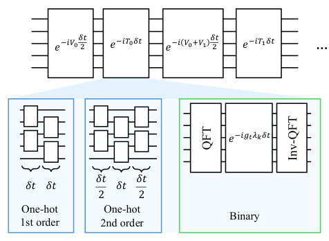
<figcaption class="paper-figure-caption"><b>Fig 1.</b> FIG. 1. Schematic quantum-circuit structure for the QHD evolution used in the circuit construction. Here Vi = eχ(ti)V , where V encodes the target objective, and Ti = eϕ(ti)K, where K is the kinetic operator. In both encodings, the po- tential term is diagonal and can be compiled into Pauli-Z rotations. For one-hot encoding, the kinetic term is mapped to nearest-neighbor XX + Y Y rotations. We group these Pauli terms into even- and odd-bond layers and apply first-, second-, or fourth-order Trotter decompositions; the first- and second-order realizations are shown. For binary encoding, the QFT and inverse QFT transform the kinetic operator into a diagonal phase operator.</figcaption>
</figure>
<figure class="paper-figure-card">
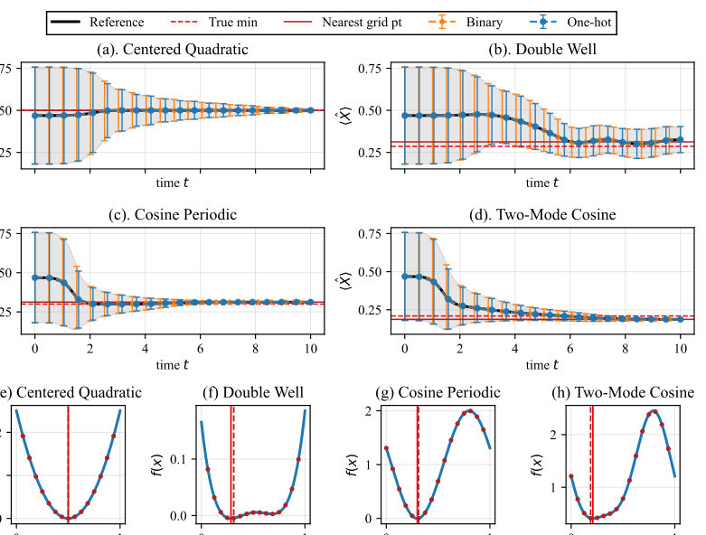
<figcaption class="paper-figure-caption"><b>Fig 2.</b> FIG. 2. Comparison of the QHD dynamics obtained from the classical split-operator solver and from the one-hot and binary quantum-circuit realizations. The four benchmark target functions f(x) are shown in (e) to (h), and the corresponding position observables are shown in (a) to (d). In panels (a) to (d), the black solid curves show the mean position ⟨x⟩, while the black shaded bands indicate ⟨x⟩±σx from the classical Schr¨odinger solver. The blue markers and error bars show the binary-encoding circuit results, and the orange markers and error bars show the one-hot-encoding circuit results, with the error bars indicating ±σx extracted from the final simulated state. The dashed red lines...</figcaption>
</figure>
<figure class="paper-figure-card">
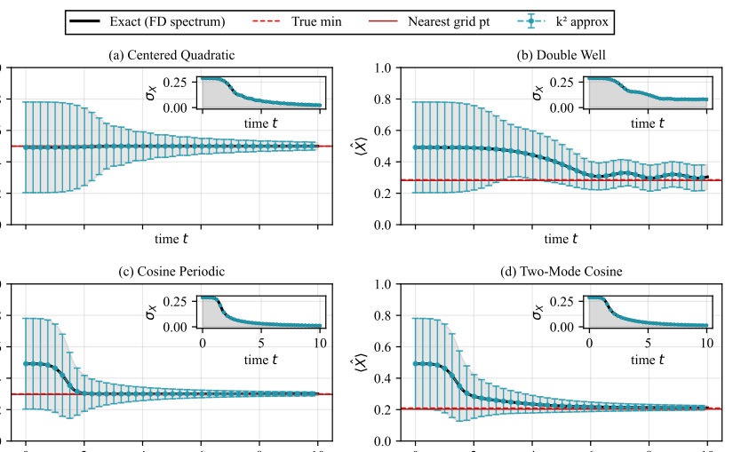
<figcaption class="paper-figure-caption"><b>Fig 3.</b> FIG. 3. Comparison of the k2-approximated kinetic operator with the exact classical Schr¨odinger-equation solver. We focus on binary encoding for the same four one-dimensional target optimization problems shown in Fig. 2, using 64 grid points for the QHD simulations. The main panels show the time dependence of ⟨x⟩and the fluctuation σx compared with the classical solver results, shown as black curves with gray shaded regions. The k2-approximated circuit results are shown as turquoise markers with error bars. The inset in each panel compares σx from the approximate quantum-circuit realization with that from the exact Schr¨odinger-equation solver. In all four test cases, the approximate...</figcaption>
</figure>
<figure class="paper-figure-card">
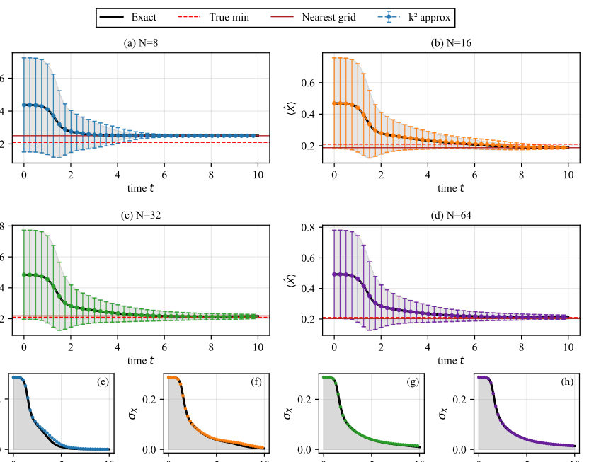
<figcaption class="paper-figure-caption"><b>Fig 4.</b> FIG. 4. Comparison of the k2-approximated kinetic operator with the exact dynamics as the number of grid points is varied. We use the two-mode cosine target function as the benchmark and solve the dynamics on (a) N = 8, (b) N = 16, (c) N = 32, and (d) N = 64 grid points. In these figures, the black curves show the exact classical dynamics of ⟨x⟩, the colored markers with error bars show the k2-approximated circuit results, the red dashed lines indicate the true minimum, and the red solid lines indicate the nearest grid point to the minimum. (e) to (h) show the corresponding spatial fluctuations σx for the same grid sizes. As the grid resolution increases, the deviation introduced by the k2...</figcaption>
</figure>
<figure class="paper-figure-card">
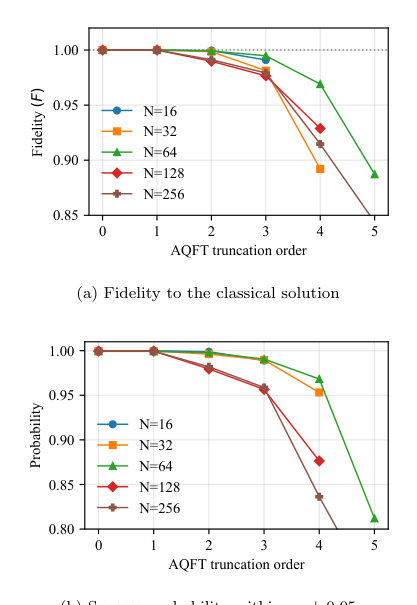
<figcaption class="paper-figure-caption"><b>Fig 5.</b> FIG. 5. Effect of approximate-QFT truncation on the two- mode cosine one-dimensional periodic benchmark. Panel (a) shows the final-state fidelity relative to the reference evolu- tion obtained from the classical Schr¨odinger-equation solver. Panel (b) shows the corresponding success probability, defined as the probability of measuring a point within ±0.05 of the optimal solution x0, similar to the criterion used in Ref. [26]. For all spatial resolutions except N = 256, we use T = 10 with 105 Trotter steps; for N = 256, we use 2 × 105 Trotter steps. The truncation order dtr is defined such that controlled rotations with angles smaller than 2−(log2 N−dtr) are omitted.</figcaption>
</figure>
</div>
<p><strong>Summary.</strong> This work rigorously compares two methods—one-hot and binary encoding—for implementing Quantum Hamiltonian Descent on a quantum computer. The authors demonstrate that binary encoding drastically reduces qubit requirements and minimizes the dominant T-gate costs compared to one-hot encoding. This guides the development of more resource-efficient algorithms for quantum optimization.</p>
<p><strong>Why it may be interesting.</strong> It provides concrete, quantitative guidelines for mapping continuous physical problems (optimization) onto discrete quantum hardware resources, which is crucial for realizing near-term quantum simulation algorithms.</p>
<details>
<summary>Detailed structure</summary>
<p><strong>Main problem.</strong> The paper analyzes the resource costs associated with implementing Quantum Hamiltonian Descent (QHD) for continuous optimization on fault-tolerant quantum computers.</p>
<p><strong>Main result.</strong> Binary amplitude encoding is shown to be superior to one-hot encoding, significantly reducing data qubits and minimizing costly non-Clifford rotations required for fault-tolerant execution.</p>
<p><strong>Method.</strong> The authors perform a detailed resource analysis by comparing gate-count scalings and T-gate counts for different quantum encodings (one-hot vs. binary) applied to QHD dynamics.</p>
<p><strong>Model / system.</strong> The model is Quantum Hamiltonian Descent, which maps continuous optimization $f(\mathbf{x})$ onto time evolution governed by a Hamiltonian $H(t) = H_K(t) + H_V(t)$. The search space is discretized and encoded using either one-hot or binary amplitude representations.</p>
<p><strong>Key observables.</strong> Gate-count scaling, T-gate counts (non-Clifford rotations), qubit count ($O(dN)$ vs $O(d \log N)$), and circuit depth.</p>
<p><strong>Important parameters / regimes.</strong> The dimensionality of the search space ($d$), the number of grid points ($N$), and the time evolution steps ($N_t$).</p>
<p><strong>Assumptions / limitations.</strong> The analysis is conducted within a digital fault-tolerant quantum computing (FTQC) model, assuming specific circuit implementations for kinetic and potential terms.</p>
<p><strong>Figures summary.</strong> Figures illustrate gate-count scaling and T-gate counts comparing different kinetic approximation methods (e.g., AQFT variants) across benchmark functions like Three-Hump Camel, Alpine 1, and Ackley.</p>
<p><strong>Paper structure.</strong> The paper introduces QHD, compares one-hot vs. binary encodings by deriving resource scalings for both the kinetic and potential terms, validates circuits against classical solvers, and concludes with recommendations for further optimization based on function structure.</p>
</details>
<details>
<summary>Abstract</summary>
<p>Quantum Hamiltonian descent (QHD) formulates continuous optimization as time-dependent quantum dynamics, where a kinetic term drives exploration and a potential term encodes the objective function. Digital implementations of QHD require encoding the search space into qubits, and this choice can shift the dominant cost among logical qubits, circuit depth, non-Clifford rotations, and potential synthesis. In this work, we present an encoding-aware resource analysis comparing one-hot and binary amplitude encodings for QHD. We derive gate-count scalings, construct and validate circuits against classical \Sch-equation solvers, and estimate Clifford+$R_z$ and fault-tolerant Clifford+$T$ resources on benchmark optimization problems. Binary encoding reduces the data register from $O(dN)$ to $O(d\log N)$ qubits and gives comparable asymptotic scaling for both kinetic and potential evolutions. Across all benchmark problems studied, binary encoding also uses fewer $R_z$ rotations than one-hot encoding, making it the preferred option for fault-tolerant implementations where arbitrary rotations dominate the cost. Kinetic approximations based on low-momentum spectra and approximate QFTs can further reduce the binary kinetic cost to polylogarithmic scaling. However, for targets such as Ackley, potential synthesis can dominate the total cost and reduce the benefit of kinetic approximations. These results suggest that exploiting the analytic structure of the target function to compile the potential evolution in QHD more efficiently is needed for further resource reductions.</p>
</details>
<p><sub><a href="#top">↑ back to top</a></sub></p>

<p><a id="paper-2607.16436"></a></p>
<h3 id="feynman-meets-turing-the-curse-of-quantum-universality"><a href="http://arxiv.org/abs/2607.16436v1">Feynman Meets Turing: The Curse of Quantum Universality</a></h3>
<p><strong>Authors:</strong> Yannik N. Böck, Holger Boche, Frank H. P. Fitzek<br>
<strong>Type:</strong> theory · <strong>Category:</strong> quantum information and computing · <strong>PDF:</strong> <a href="https://arxiv.org/pdf/2607.16436v1">https://arxiv.org/pdf/2607.16436v1</a><br>
<strong>Analysis basis:</strong> full PDF text, analyzed in chunks</p>
<div class="figure-strip-hint">↔ Scroll figures horizontally</div>
<div class="paper-figures-scroll">
<figure class="paper-figure-card">
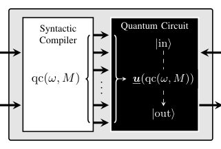
<figcaption class="paper-figure-caption"><b>Fig 1.</b> Fig. 1. Schematics of Quantum Computing in the Circuit Model.</figcaption>
</figure>
<figure class="paper-figure-card">
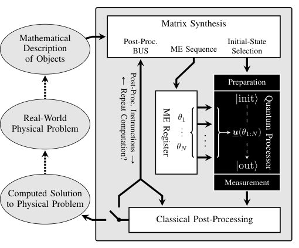
<figcaption class="paper-figure-caption"><b>Fig 2.</b> Fig. 2. Schematics of a “Matrix Quantum Computer”. The matrix-synthesis handler receives the description of a quantum algorithm intended to solve some real-world physical problem. The description employs a high-level quantum programming language that hides the underlying computations from the user. Based on the given description, the handler determines suitable post-processing steps, selects an initial state for the available qubit memory, and extracts a vector of matrix elements (ME) θ1, . . . , θN ” θ1:N that correspond to the N “ M ¨M entries of a unitary M-by-M matrix upθ1:Nq. The quantum matrix processor reads the entries from the ME register and implements the corresponding unitary...</figcaption>
</figure>
</div>
<p><strong>Summary.</strong> This paper proves a fundamental limitation: any quantum language capable of describing all possible computable unitary operations cannot have its valid programs recognized by a semi-decidable compiler. This structural difference arises because the semantic domain of quantum circuits consists only of total unitary operators, unlike classical languages which allow for partial computations.</p>
<p><strong>Why it may be interesting.</strong> It provides a deep theoretical constraint on the formal expressiveness of quantum programming languages, which is foundational knowledge for anyone designing or analyzing quantum hardware control software.</p>
<details>
<summary>Detailed structure</summary>
<p><strong>Main problem.</strong> To establish a fundamental limitation on Quantum Circuit Description Languages (QCDLs) regarding their formal language theory properties, contrasting them with classical programming languages.</p>
<p><strong>Main result.</strong> Any semantically universal QCDL cannot have a semi-decidable set of semantically meaningful descriptions, implying no reliable compiler can exist for such a language.</p>
<p><strong>Method.</strong> Formal analysis using recursion theory and computable analysis to compare the computability properties of classical vs. quantum semantic domains.</p>
<p><strong>Model / system.</strong> The model involves formalizing QCDLs where semantics are defined by computable unitary matrices, contrasting this total domain with the partial function descriptions of classical languages.</p>
<p><strong>Key observables.</strong> The set of semantically meaningful program descriptions; whether this set is semi-decidable or recursively enumerable.</p>
<p><strong>Important parameters / regimes.</strong> Fixed dimension N &gt;= 2 for semantic universality; computable unitary matrices ($\mathcal{U}_{\mu}$).</p>
<p><strong>Assumptions / limitations.</strong> The result holds assuming the QCDL aims to describe all computable unitary matrices (semantic universality).</p>
<p><strong>Figures summary.</strong> Figures schematically illustrate quantum computing in the circuit model and a 'Matrix Quantum Computer' setup, detailing how high-level descriptions map to unitary matrix elements.</p>
<p><strong>Paper structure.</strong> The paper builds from general computability theory concepts to define QCDLs, contrasts their total semantic domain with classical partial functions, and culminates in proving that universal QCDLs violate semi-decidability.</p>
</details>
<details>
<summary>Abstract</summary>
<p>We consider a formal model of quantum circuit description languages (QCDLs) in which semantically meaningful programs correspond to computable unitary matrices. We show that any semantically universal QCDL -- that is, any QCDL able to describe all computable unitary matrices, which in turn form the set of matrices we can meaningfully represent on digital hardware -- cannot have a semi-decidable set of semantically meaningful descriptions. In particular, no such language admits a compiler that reliably recognizes all valid program descriptions. This result stands in contrast to classical programming languages. While compilation in languages such as C or C++ may itself involve non-terminating computations, the set of semantically meaningful programs remains recursively enumerable, since successful compilation provides a witness of validity. The essential difference lies in the nature of the semantic domains: classical languages describe partial recursive functions, whereas QCDLs describe total unitary operators. Our analysis establishes a fundamental limitation of quantum circuit description languages and highlights a structural distinction between classical and quantum models of computation at the level of formal language theory.</p>
</details>
<p><sub><a href="#top">↑ back to top</a></sub></p>

<p><a id="paper-2607.16800"></a></p>
<h3 id="identity-paired-progressive-depth-training-when-trainability-persists-beyond-expressibility"><a href="http://arxiv.org/abs/2607.16800v1">Identity-Paired Progressive Depth Training: When Trainability Persists Beyond Expressibility</a></h3>
<p><strong>Authors:</strong> Athanasios Hadjidimoulas, Tirthak Patel, Anastasios Kyrillidis<br>
<strong>Type:</strong> theory · <strong>Category:</strong> quantum information and computing · <strong>PDF:</strong> <a href="https://arxiv.org/pdf/2607.16800v1">https://arxiv.org/pdf/2607.16800v1</a><br>
<strong>Analysis basis:</strong> full PDF text, analyzed in chunks</p>
<div class="figure-strip-hint">↔ Scroll figures horizontally</div>
<div class="paper-figures-scroll">
<figure class="paper-figure-card">
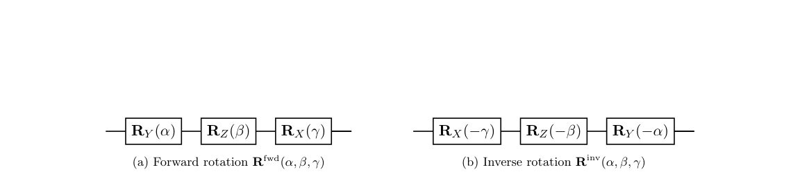
<figcaption class="paper-figure-caption"><b>Fig 1.</b> Figure 1: Single-qubit rotation gates. (a) The forward rotation applies RY , RZ, RX in sequence. (b) The inverse rotation negates all angles and reverses the gate order, yielding the adjoint: Rinv = [Rfwd]†. Composing (a) followed by (b) yields I2 (Theorem 2.1).</figcaption>
</figure>
<figure class="paper-figure-card">
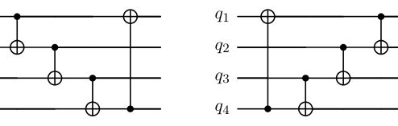
<figcaption class="paper-figure-caption"><b>Fig 2.</b> Figure 2: CNOT rings for n = 4 qubits. (a) Forward ring: gates are applied in order CNOT1→2, . . . , CNOT4→1. (b) Reverse ring: same gates in opposite order. Placing (a) imme- diately followed by (b) yields UentU−1 ent = I16.</figcaption>
</figure>
<figure class="paper-figure-card">
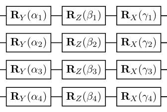
<figcaption class="paper-figure-caption"><b>Fig 3.</b> Figure 3: Parallel forward rotation layer Rfwd(θ) for n = 4 qubits. Each qubit undergoes an independent three-gate rotation; no entanglement occurs. The inverse layer Rinv negates all angles and reverses the gate order on each wire.</figcaption>
</figure>
<figure class="paper-figure-card">
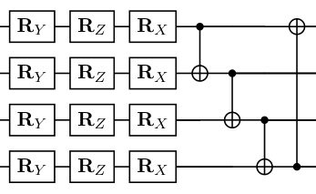
<figcaption class="paper-figure-caption"><b>Fig 4.</b> Figure 4: Standard HEA circuit UHEA 2 for n = 4, D = 2.</figcaption>
</figure>
<figure class="paper-figure-card">
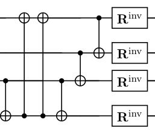
<figcaption class="paper-figure-caption"><b>Fig 5.</b> Figure 5: Identity-pair expansion from depth D to depth D+2 for n = 4.</figcaption>
</figure>
</div>
<p><strong>Summary.</strong> This paper introduces Identity-Paired Progressive Depth Training (IP-PDT) to overcome training instabilities in Variational Quantum Algorithms. By strategically adding identity-paired blocks, it eliminates initialization shock while maintaining a trainable structure that allows optimization improvements beyond the point where the circuit's expressibility saturates. The work provides deep theoretical guarantees linking energy minimization to ground-state fidelity.</p>
<p><strong>Why it may be interesting.</strong> It provides rigorous mathematical tools (homotopy continuation, strong convexity analysis) to stabilize quantum circuit optimization protocols, which is crucial for developing reliable near-term quantum algorithms.</p>
<details>
<summary>Detailed structure</summary>
<p><strong>Main problem.</strong> Variational Quantum Algorithms (VQAs) suffer from training difficulties due to circuit depth sensitivity, initialization shock, and landscape pathologies like barren plateaus.</p>
<p><strong>Main result.</strong> The proposed Identity-Paired Progressive Depth Training (IP-PDT) method eliminates initialization shock by appending identity-pair blocks, allowing optimization improvements to persist even after the variational manifold saturates ('trainability beyond expressibility').</p>
<p><strong>Method.</strong> The authors formalize IP-PDT as a homotopy continuation method on nested manifolds, proving monotone energy guarantees and bounding the difference between sequential minimizers using strong convexity arguments.</p>
<p><strong>Model / system.</strong> The study concerns VQAs minimizing an energy expectation $E(	heta) = \langle\psi(	heta)|H|\psi(	heta)
angle$ for an n-qubit system, utilizing hardware-efficient ansätze built from single-qubit rotations and CNOT entangling layers.</p>
<p><strong>Key observables.</strong> Energy expectation value ($E$), Ground-state fidelity ($F(\psi)$), Initialization Shock (energy spike upon depth increase).</p>
<p><strong>Important parameters / regimes.</strong> Circuit depth ($D$), Jitter scale ($\sigma$), Strong convexity constant ($\mu_D$), Spectral gap ($\Delta$).</p>
<p><strong>Assumptions / limitations.</strong> The analysis requires the jitter parameter $\sigma$ to be sufficiently small to maintain positive strong convexity across depth expansions.</p>
<p><strong>Figures summary.</strong> Figure 1 illustrates single-qubit rotation gates and their identity pairing property ($R_{	ext{fwd}} \circ R_{	ext{inv}} = I_2$).</p>
<p><strong>Paper structure.</strong> The paper introduces PDT, proposes IP-PDT to solve initialization shock via CNOT cancellation, develops the theoretical framework using continuation methods, proves energy guarantees through strong convexity bounds, and finally connects energy error to ground-state fidelity.</p>
</details>
<details>
<summary>Abstract</summary>
<p>Variational Quantum Algorithms (VQAs) are a leading paradigm for near-term quantum computing, yet their training suffers from sensitivity to circuit depth, initialization, and landscape pathologies such as barren plateaus. We study \emph{progressive depth training} (PDT) -- a layerwise curriculum that trains a shallow circuit before appending new layers -- and identify a fundamental obstacle: fixed entangling gates (CNOTs) in hardware-efficient ansätze cause \emph{initialization shock}, an energy spike when new layers are added. We propose \emph{identity-paired progressive depth training} (IP-PDT), which appends forward/inverse block pairs -- each consisting of a standard rotation$+$CNOT block followed by its reverse -- that compose to the identity at initialization. Because the adjacent CNOT rings cancel, the effective circuit retains only \textit{a single entangling layer} surrounded by \textit{overparameterized local rotations}. We prove a simple \textit{Reachable Set Saturation Theorem}: under this construction the variational manifold expands exactly once (when post-entangler rotations are first introduced) and then \emph{saturates}; all subsequent depth increases provide pure overparameterization of single-qubit unitaries. Despite this saturation, progressive addition of rotation parameters can continue to improve optimization outcomes -- a phenomenon we term \emph{trainability beyond expressibility}. We formalize IP-PDT as a continuation method on nested manifolds, prove monotone energy guarantees under an acceptance rule, and connect energy error to ground-state fidelity through spectral-gap inequalities. A detailed resource analysis shows that IP-PDT achieves lower total gate cost than both baselines by eliminating most CNOT gates.</p>
</details>
<p><sub><a href="#top">↑ back to top</a></sub></p>

<p><a id="paper-2607.17314"></a></p>
<h3 id="interpolative-separable-density-fitting-for-transcorrelated-hamiltonians"><a href="http://arxiv.org/abs/2607.17314v1">Interpolative Separable Density-Fitting for Transcorrelated Hamiltonians</a></h3>
<p><strong>Authors:</strong> Ke Liao, Yifan Cheng, Werner Dobrautz, Tianyu Zhu, Ali Alavi<br>
<strong>Type:</strong> theory · <strong>Category:</strong> strongly correlated electrons · <strong>PDF:</strong> <a href="https://arxiv.org/pdf/2607.17314v1">https://arxiv.org/pdf/2607.17314v1</a><br>
<strong>Analysis basis:</strong> full PDF text, analyzed in chunks</p>
<div class="figure-strip-hint">↔ Scroll figures horizontally</div>
<div class="paper-figures-scroll">
<figure class="paper-figure-card">
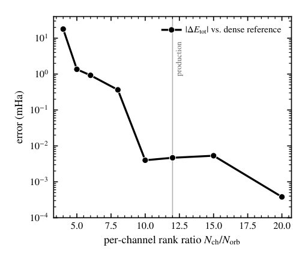
<figcaption class="paper-figure-caption"><b>Fig 1.</b> FIG. 1: Convergence of the ISDF approximation with rank ratio Nch/Norb for ethylene (C2H4, cc-pVTZ, Norb = 116, VMC-optimized Boys–Handy Jastrow): ISDF-xTC-CCSD total-energy error |∆Etot| measured relative to an explicit dense non-ISDF reference. The vertical line marks the production setting Nch = 12 Norb.</figcaption>
</figure>
<figure class="paper-figure-card">
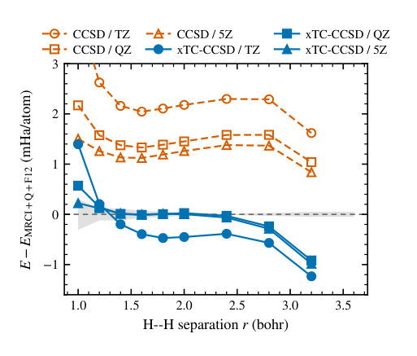
<figcaption class="paper-figure-caption"><b>Fig 2.</b> FIG. 3: Basis-set convergence on the H10 chain: per-atom energy deviation from the MRCI+Q+F12 CBS-limit ref- erence for xTC-CCSD (filled symbols) and canonical CCSD (open symbols) at cc-pVTZ (circles), cc-pVQZ (squares), and cc-pV5Z (triangles), versus H–H separa- tion. For xTC-CCSD the cc-pV5Z point is the MP2NO series (nkeep = 100, 200, 300) extrapolated to the finite full-virtual limit nkeep = nvir = 544; for canonical CCSD it is the full (untruncated) cc-pV5Z result. Both there- fore reach the full-virtual limit. The shaded band is the reference extrapolation uncertainty. xTC-CCSD at cc- pVTZ already outperforms canonical CCSD at cc-pV5Z, and its cc-pVQZ and cc-pV5Z results coincide...</figcaption>
</figure>
<figure class="paper-figure-card">
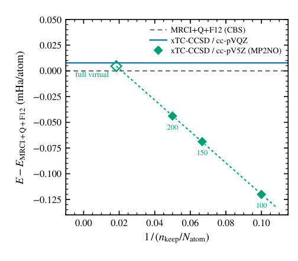
<figcaption class="paper-figure-caption"><b>Fig 3.</b> FIG. 2: Convergence of the H10 cc-pV5Z MP2NO virtual-orbital cutoff at r = 1.4 bohr. The horizon- tal axis is the inverse retained-orbital count per atom, 1/(nkeep/Natom), so the full-virtual limit lies at the fi- nite abscissa 1/(nvir/Natom) = 10/544 (cc-pV5Z has nvir = 544 for H10); the vertical axis is the per-atom en- ergy deviation from the MRCI+Q+F12 reference. Filled diamonds are the finite nkeep/Natom = 10, 15, 20 results; the dashed line is an unweighted linear least-squares fit, evaluated at the full-virtual abscissa (open diamond) to estimate the full-virtual limit. The dashed horizon- tal line marks the reference and the solid line the full- virtual cc-pVQZ result. The...</figcaption>
</figure>
<figure class="paper-figure-card">
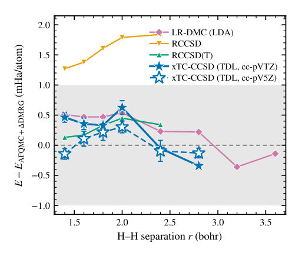
<figcaption class="paper-figure-caption"><b>Fig 4.</b> FIG. 4: Deviation of the per-atom energy from the AFQMC+∆DMRG reference for the hydrogen chain as a function of H–H separation r. The ISDF- xTC-CCSD thermodynamic-limit result (this work, cc- pVTZ; filled stars) stays within ±1 mHa/atom (shaded band) across the studied xTC range of separations (1.4–2.8 bohr), outperforming RCCSD and tracking CBS-extrapolated RCCSD(T) and continuous-space LR- DMC(LDA). Open stars (dashed) show the cc-pV5Z MP2NO thermodynamic-limit series, which reduces the maximum absolute reference deviation from 0.63 to 0.31 mHa/atom and supports residual orbital-basis ef- fects below about 0.6 mHa/atom over this range at the stated MP2NO cutoff. Error bars on both TDL...</figcaption>
</figure>
<figure class="paper-figure-card">
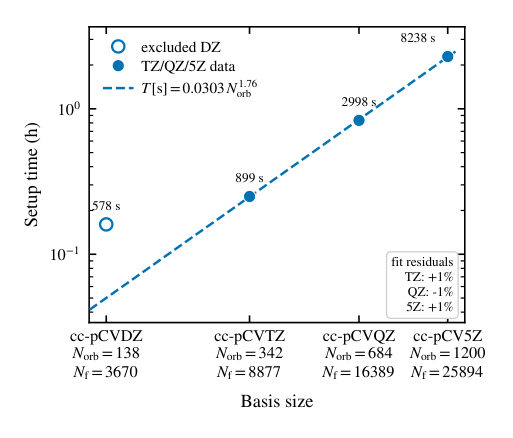
<figcaption class="paper-figure-caption"><b>Fig 5.</b> FIG. 6: Basis-set scaling of the ISDF-xTC setup time for benzene on a single B200 GPU. Filled points (cc-pCVTZ/QZ/5Z) define the power-law fit T [s] = 0.030 N 1.76 orb (dashed); the cc-pCVDZ point (open) is excluded from the fit. Annotations give the absolute setup time in seconds; the lower axis lists Norb and the fused auxiliary dimension Nf ≡Nfused. Setup cov- ers grid/orbital preparation, ISDF decomposition, and K/∆U kernel/intermediate construction, but excludes SCF/VMC, four-index materialization, and CCSD itera- tions.</figcaption>
</figure>
</div>
<p><strong>Summary.</strong> This paper introduces ISDF-xTC-CCSD, a novel computational framework designed to accurately calculate electron correlation energies by combining the Transcorrelated method with Interpolative Separable Density-Fitting. By compressing complex integrals into low-rank forms, it drastically reduces computational cost while maintaining high accuracy, allowing reliable extrapolation to the Complete Basis Set limit for large molecular systems.</p>
<p><strong>Why it may be interesting.</strong> While focused on molecular quantum chemistry, the core techniques—low-rank approximation of complex correlation operators and achieving high-accuracy CBS extrapolation—are highly relevant for developing scalable methods in strongly correlated solid-state materials simulations.</p>
<details>
<summary>Detailed structure</summary>
<p><strong>Main problem.</strong> The primary challenge is accurately calculating electron correlation energies, especially ensuring convergence towards the Complete Basis Set (CBS) limit for large molecular systems.</p>
<p><strong>Main result.</strong> The proposed ISDF-xTC-CCSD method achieves state-of-the-art accuracy on benzene and the linear hydrogen chain, demonstrating a significantly more robust CBS extrapolation than conventional coupled-cluster methods.</p>
<p><strong>Method.</strong> It combines the Transcorrelated (TC) Hamiltonian approach with an effective two-body ($ ext{xTC}$) treatment of three-body operators, utilizing Interpolative Separable Density-Fitting (ISDF) to reduce computational scaling for grid integrals.</p>
<p><strong>Model / system.</strong> The method is applied to electronic structure calculations for molecules like benzene and the linear hydrogen chain. The underlying physics involves treating electron correlation via a Jastrow factor incorporated into the Hamiltonian ($ar{H}$).</p>
<p><strong>Key observables.</strong> Basis-set convergence towards the CBS limit; ground-state energy ($E_{	ext{corr,CBS}}$) for specific molecules.</p>
<p><strong>Important parameters / regimes.</strong> High basis set levels (up to cc-pV5Z); large system sizes (up to 1200 orbitals in benzene).</p>
<p><strong>Assumptions / limitations.</strong> The ISDF approximation assumes that grid-evaluated integrals possess a low-rank structure, allowing for efficient tensor compression and calculation.</p>
<p><strong>Figures summary.</strong> Figures compare the per-atom energy deviation from high-level references (like AFQMC+DMRG) across different bond separations for the hydrogen chain, and show the CBS extrapolation of benzene energy relative to the Hartree-Fock limit.</p>
<p><strong>Paper structure.</strong> The paper first establishes the need for efficient correlation treatment using TC methods. It then details how ISDF is applied to compress the necessary grid integrals (K and xTC terms). Finally, it presents benchmark calculations on model systems to validate accuracy and convergence properties.</p>
</details>
<details>
<summary>Abstract</summary>
<p>The transcorrelated (TC) method dramatically accelerates the convergence of correlated calculations toward the complete-basis-set (CBS) limit by folding a Jastrow correlator into the Hamiltonian via a similarity transformation, incorporating the electron--electron cusp into the effective interaction. We make the TC framework practical for large systems and flexible, multi-center correlators by compressing the grid-evaluated TC integrals with the interpolative separable density-fitting (ISDF) approximation, combined with the effective two-body (xTC) treatment of the three-body operator. This low-rank representation reduces storage and integration costs by orders of magnitude, and a multi-GPU implementation with automatic differentiation of the correlator makes the construction routine for large basis sets. We demonstrate the resulting ISDF-xTC-CCSD method on the linear hydrogen chain, reaching the joint thermodynamic and CBS limits with basis sets up to cc-pV5Z in agreement with state-of-the-art many-body references to within about 1~mHa/atom, and on the benzene ground-state energy with up to 1200 orbitals (cc-pCV5Z), where the method attains state-of-the-art accuracy at the coupled cluster singles and doubles level and its CBS extrapolation is markedly more robust than that of conventional coupled-cluster methods.</p>
</details>
<p><sub><a href="#top">↑ back to top</a></sub></p>

<p><a id="paper-2607.17554"></a></p>
<h3 id="lie-group-mode-connectivity-in-quantum-machine-learning-from-a-dynamical-lie-algebra-perspective"><a href="http://arxiv.org/abs/2607.17554v1">Lie-Group Mode Connectivity in Quantum Machine Learning from a Dynamical Lie Algebra Perspective</a></h3>
<p><strong>Authors:</strong> Hiroshi Ohno<br>
<strong>Type:</strong> both · <strong>Category:</strong> quantum information and computing · <strong>PDF:</strong> <a href="https://arxiv.org/pdf/2607.17554v1">https://arxiv.org/pdf/2607.17554v1</a><br>
<strong>Analysis basis:</strong> full PDF text, analyzed in chunks</p>
<div class="figure-strip-hint">↔ Scroll figures horizontally</div>
<div class="paper-figures-scroll">
<figure class="paper-figure-card">
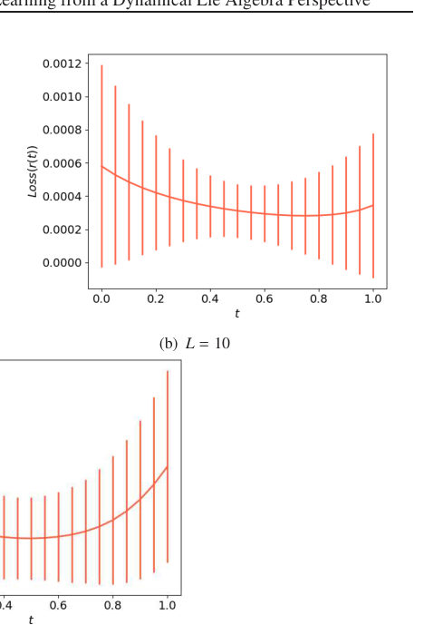
<figcaption class="paper-figure-caption"><b>Fig 1.</b> Figure 1: Results of loss(r(t)) for L ∈{5, 10, 20}</figcaption>
</figure>
</div>
<p><strong>Summary.</strong> This paper develops a theoretical and numerical framework to define 'mode connectivity' in Quantum Machine Learning by analyzing the geometry of the reachable unitary Lie group. It proves that if certain conditions hold, the low-loss region on this group is path-connected, offering an interpretation independent of circuit parameterization. The results suggest that overparameterization enables observing these inherent quantum geometric connections through optimization experiments.</p>
<p><strong>Why it may be interesting.</strong> This work provides a rigorous geometric framework connecting optimization landscape properties (loss barriers) directly to fundamental concepts in quantum computation (unitary group structure), which is highly relevant for understanding variational quantum algorithms.</p>
<details>
<summary>Detailed structure</summary>
<p><strong>Main problem.</strong> The study formulates a geometric understanding of 'mode connectivity' for parameterized quantum circuits, recognizing that the physically relevant object is the unitary transformation rather than the parameter vector.</p>
<p><strong>Main result.</strong> The authors prove that under certain conditions, the low-loss sublevel set on the reachable unitary Lie group is path-connected, providing a parameterization-independent geometric interpretation of mode connectivity in QML.</p>
<p><strong>Method.</strong> The theoretical framework uses Morse theory applied to the loss function defined on the reachable unitary Lie group. Numerically, they use geodesic interpolations and calculate a 'Barrier' metric to test for near-zero loss barriers between trained unitaries.</p>
<p><strong>Model / system.</strong> The model involves parameterized quantum circuits generating unitary transformations $U(	heta)$ acting on qubits (specifically 5-qubit Pauli strings are mentioned). The analysis focuses on the reachable unitary Lie group generated by a Dynamical Lie Algebra.</p>
<p><strong>Key observables.</strong> Mode connectivity (path-connectedness of low-loss sublevel sets), Barrier function $B(U_a, U_b)$, and the dimension of the reachable Lie algebra $\dim(h)$.</p>
<p><strong>Important parameters / regimes.</strong> The loss tolerance ($\epsilon$), the degree of overparameterization, and the path interpolation parameter $t$.</p>
<p><strong>Assumptions / limitations.</strong> Key assumptions include assuming the global minimizer set is connected and that there are no critical values of the loss function within the relevant low-loss band.</p>
<p><strong>Figures summary.</strong> Figure 1 (implied) shows that the loss along geodesic interpolations between trained unitaries remains close to or below the endpoint losses, supporting the hypothesis of preserved connectivity.</p>
<p><strong>Paper structure.</strong> The paper first establishes the theoretical foundation by defining mode connectivity on the Lie group and proving path-connectivity via Morse theory. It then discusses how overparameterization allows lifting these paths to parameter space for experimental observation. Finally, it presents numerical experiments using geodesic interpolations to validate the theory.</p>
</details>
<details>
<summary>Abstract</summary>
<p>Mode connectivity has been widely studied in classical machine learning as a geometric property of low-loss regions in parameter space. In quantum machine learning (QML), however, the physically relevant object is not the parameter vector itself but the unitary transformation implemented by a parameterized quantum circuit. In this study, we formulate mode connectivity on the reachable unitary Lie group generated by the dynamical Lie algebra of the generators. We show that, under a near-minimum connectedness assumption and the absence of critical values in a low-loss band, the corresponding low-loss sublevel set on the reachable Lie group is path-connected. This provides a geometric interpretation of mode connectivity in QML that is independent of a particular parameterization. We further discuss how overparameterization can enable the lifting of Lie-group paths to parameter space, thereby making Lie-group connectivity observable in parameter-space experiments. Finally, we present toy numerical experiments in which geodesic interpolations between trained unitaries exhibit nearly zero loss barriers, consistent with the proposed interpretation.</p>
</details>
<p><sub><a href="#top">↑ back to top</a></sub></p>

<p><a id="paper-2607.18204"></a></p>
<h3 id="quantispect-a-structure-aware-lightweight-3d-cnn-pre-decoder-for-scalable-surface-code-quantum-error-correction"><a href="http://arxiv.org/abs/2607.18204v1">QuantiSpect: A Structure-Aware Lightweight 3D CNN Pre-Decoder for Scalable Surface Code Quantum Error Correction</a></h3>
<p><strong>Authors:</strong> Pan Gao, Xu-Sheng Xu, Ji-Ze Han, Jing-Wei Wen, Ling Qian, Xu-Dong Lv, Run-Qing Zhang, Xiao-Xiao Hu, Gui-Lu Long<br>
<strong>Type:</strong> theory · <strong>Category:</strong> quantum information and computing · <strong>PDF:</strong> <a href="https://arxiv.org/pdf/2607.18204v1">https://arxiv.org/pdf/2607.18204v1</a><br>
<strong>Analysis basis:</strong> full PDF text, analyzed in chunks</p>
<div class="figure-strip-hint">↔ Scroll figures horizontally</div>
<div class="paper-figures-scroll">
<figure class="paper-figure-card">
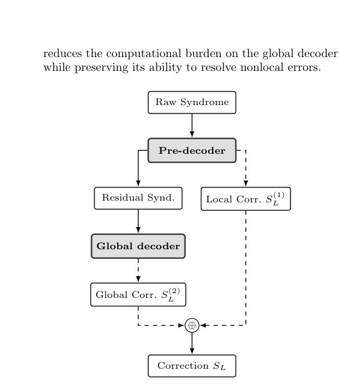
<figcaption class="paper-figure-caption"><b>Fig 1.</b> FIG. 1. Two-stage decoding workflow.</figcaption>
</figure>
<figure class="paper-figure-card">
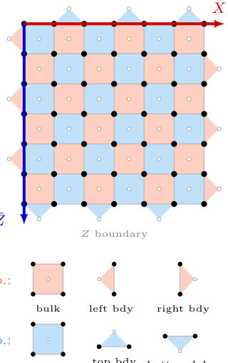
<figcaption class="paper-figure-caption"><b>Fig 2.</b> FIG. 2. Rotated surface code patch for d = 7. The d2 = 49 data qubits (black circles) reside on the vertices of a 7 × 7 square lattice. X-type stabilizers (orange plaquettes) and Z- type stabilizers (blue plaquettes) alternate in a checkerboard pattern. Bulk stabilizers are weight-four operators, boundary stabilizers (triangles at the edges) are weight-two operators. Open circles mark ancilla qubit positions at plaquette cen- ters. Minimum-weight representatives of the logical operators ¯ X (red, horizontal) and ¯Z (blue, vertical) connect opposite boundaries of the matching type.</figcaption>
</figure>
<figure class="paper-figure-card">
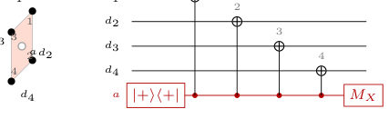
<figcaption class="paper-figure-caption"><b>Fig 3.</b> FIG. 3. Syndrome extraction circuits for bulk (weight-four) stabilizers. Left: a single plaquette with four data qubits (d1–d4, filled) and one ancilla (a, open); numbers indicate the CNOT order. Right: the corresponding circuit. (a) Z- type: ancilla prepared in |0⟩, data qubits control CNOTs onto the ancilla, measured in Z basis (MZ). (b) X-type: ancilla prepared in |+⟩, ancilla controls CNOTs onto data qubits, measured in X basis (MX). Boundary stabilizers use the same circuit with only two of the four CNOT slots active.</figcaption>
</figure>
<figure class="paper-figure-card">
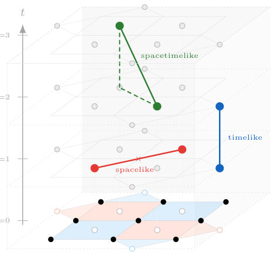
<figcaption class="paper-figure-caption"><b>Fig 4.</b> FIG. 4. The space–time syndrome volume for the rotated surface code (d = 3 example). Base plane: the 2D sta- bilizer lattice with 3 × 3 data qubits (black dots). Z-type (blue) and X-type (orange) plaquettes alternate in a checker- board pattern, with weight-2 boundary stabilizers (triangles) at the edges, open circles mark ancilla (detector) positions. Vertical axis: measurement rounds t. At each round, every stabilizer yields a detection event di,k (gray dots, d2−1 = 8 per slice). Three classes of faults produce distinct patterns of non-trivial events [29, 31]: spacelike faults (data-qubit er- rors, red) trigger two spatially adjacent detectors in the same time slice, timelike faults...</figcaption>
</figure>
<figure class="paper-figure-card">
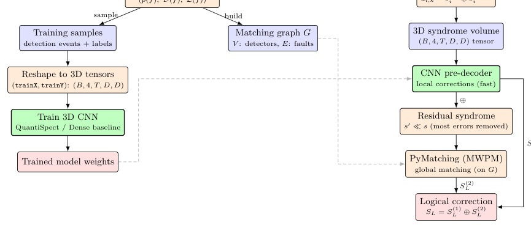
<figcaption class="paper-figure-caption"><b>Fig 5.</b> FIG. 5. End-to-end hybrid decoding pipeline. Left (offline): Stim constructs the detector error model (DEM) from the annotated stabilizer circuit, the DEM is used both to generate training data (detection event tensors and correction labels) and to build the matching graph G = (V, E). The 3D CNN pre-decoder is trained on the reshaped tensors. Right (online): Each QEC cycle produces a 3D syndrome volume from the stabilizer measurements. The trained CNN outputs a sparse residual syndrome (s′ ≪s) and its own logical prediction S(1) L . PyMatching performs minimum-weight perfect matching on the pre- built graph G using the residual, producing S(2) L . The final logical correction is SL = S(1) L...</figcaption>
</figure>
</div>
<p><strong>Summary.</strong> This paper introduces QuantiSpect, a novel, lightweight 3D CNN pre-decoder designed to accelerate syndrome decoding for surface code QEC. By factorizing dense convolutions into structure-aware spatial and temporal branches, it drastically reduces computational cost while maintaining or improving the error correction threshold compared to complex baseline models.</p>
<p><strong>Why it may be interesting.</strong> The explicit focus on optimizing computational overhead (MACs/parameters) for quantum error correction decoding makes it highly relevant to the engineering challenges of building fault-tolerant quantum hardware.</p>
<details>
<summary>Detailed structure</summary>
<p><strong>Main problem.</strong> Real-time decoding is a critical bottleneck for large-scale fault-tolerant quantum computing using surface codes.</p>
<p><strong>Main result.</strong> The proposed QuantiSpect model significantly outperforms dense CNN baselines by achieving comparable performance with substantially fewer parameters and computational overhead, enabling faster error correction.</p>
<p><strong>Method.</strong> It introduces QuantiSpect, a lightweight 3D CNN pre-decoder that replaces dense convolutions with three parallel, structure-aware branches (spatial, temporal, spatio-temporal) within each residual block.</p>
<p><strong>Model / system.</strong> The work focuses on the rotated surface code for Quantum Error Correction (QEC), where syndrome measurements are organized into a 3D space-time volume due to circuit-level noise. The decoding process aims to find minimum-weight perfect matchings in this 3D graph.</p>
<p><strong>Key observables.</strong> Logical Error Rate (LER), circuit-level threshold ($p_{th}$), decoding latency, parameter count, and per-voxel MAC operations.</p>
<p><strong>Important parameters / regimes.</strong> Code distance ($d$), physical error rate ($p$), receptive field size ($R$).</p>
<p><strong>Assumptions / limitations.</strong> The design exploits the partial separability of spatial and temporal syndrome correlations inherent in surface code errors to factorize the convolutions, avoiding dense 3D mixing.</p>
<p><strong>Figures summary.</strong> Figures illustrate the two-stage decoding workflow (raw syndrome $
ightarrow$ pre-decoder $
ightarrow$ residual syndrome $
ightarrow$ global decoder) and visualize the three classes of faults (spacelike, timelike, spacetimelike) in the space-time syndrome volume.</p>
<p><strong>Paper structure.</strong> The paper first establishes the bottleneck of real-time decoding. It then details the structure of surface code error detection in a 3D space-time lattice. The core contribution is presenting QuantiSpect as a factorized CNN pre-decoder, followed by extensive benchmarking against existing methods using LER and threshold analysis.</p>
</details>
<details>
<summary>Abstract</summary>
<p>Real-time decoding is a critical bottleneck for large-scale fault-tolerant quantum computing. AI-based neural pre-decoders locally correct most physical errors before passing residual syndromes to a global decoder, enabling sub-microsecond latencies. However, existing architectures carry significant overhead from dense 3D convolutions. We present QuantiSpect, a lightweight 3D convolutional neural network (CNN) pre-decoder for the rotated surface code, built on the decoding pipeline of Chamberland et al. The key idea is to replace the dense 3D convolutions with three parallel branches in each residual block: a depthwise spatial branch, a depthwise temporal branch, and a grouped spatio-temporal branch, followed by a squeeze-and-excitation channel gate. This reflects the structure of surface code errors, where spatial and temporal syndrome correlations are partially separable. On a unified 4xA100 GPU benchmark, QuantiSpect matches the receptive field of the Accurate baseline at R=13 while using ~2.71x fewer parameters (0.663M vs 1.80M) and ~2.84x fewer per-voxel convolutional MACs. It matches Accurate's circuit-level threshold and accuracy at moderate and large code distances, reduces the logical error rate by up to ~1.85x relative to uncorrelated PyMatching at d=13, p=0.5%, and speeds up the PyMatching decode by up to 3.11x at d=23. We also explored enlarging the receptive field by adding blocks. Even at R=21, the model uses only 1.18M parameters, fewer than both the R=13 Accurate baseline (1.80M) and the R=17 dense model (4.22M), despite its larger receptive field. This expanded variant significantly outperforms the Accurate model, raising the circuit-level threshold to ~0.80% and further reducing the logical error rate. Together, both variants show that a structure-aware factorized design is an effective, parameter-efficient alternative to a dense one for decoding the surface code.</p>
</details>
<p><sub><a href="#top">↑ back to top</a></sub></p>

<p><a id="paper-2607.17690"></a></p>
<h3 id="quantum-key-distribution-beyond-stationary-channels"><a href="http://arxiv.org/abs/2607.17690v1">Quantum Key Distribution Beyond Stationary Channels</a></h3>
<p><strong>Authors:</strong> Vaisakh Mannalath, Víctor Zapatero, Kiyoshi Tamaki, Marcos Curty<br>
<strong>Type:</strong> theory · <strong>Category:</strong> quantum information and computing · <strong>PDF:</strong> <a href="https://arxiv.org/pdf/2607.17690v1">https://arxiv.org/pdf/2607.17690v1</a><br>
<strong>Analysis basis:</strong> full PDF text, analyzed in chunks</p>
<div class="figure-strip-hint">↔ Scroll figures horizontally</div>
<div class="paper-figures-scroll">
<figure class="paper-figure-card">
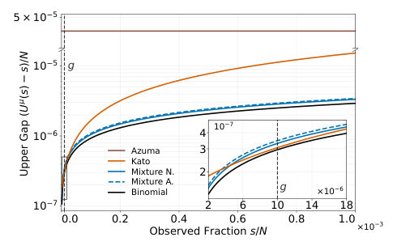
<figcaption class="paper-figure-caption"><b>Fig 1.</b> FIG. 1. Comparison of upper bounds on µ for N = 1010</figcaption>
</figure>
<figure class="paper-figure-card">

<figcaption class="paper-figure-caption"><b>Fig 2.</b> FIG. 2. Finite secret key rate versus number of rounds for a decoy-state BB84 protocol with an asymmetric passive receiver over a LEO-satellite link with channel parameters d = 10−7 and δmis = 0.03. The expected loss is Lexp = 30 dB, while panels (a) and (b) use Lobs = 35 and 40 dB, respectively. Blue curves use the numerical mixture-martingale bounds of Proposition 1 with [A, B] = [0, 10] (solid), their corresponding analytical relaxations (dashed), and the fixed-λ martingale bound of Proposition 1 (dotted). The remaining curves use the Clopper–Pearson binomial benchmark (black) and Kato’s bound [17] (orange). Azuma–Hoeffding [16] curves are omit- ted since their positive-key thresholds...</figcaption>
</figure>
<figure class="paper-figure-card">

<figcaption class="paper-figure-caption"><b>Fig 3.</b> FIG. 3. Finite secret key rate versus number of rounds for an asymmetric passive decoy-state BB84 protocol over a GEO- satellite link with channel parameters d = 10−9 and δmis = 0.01. The expected loss is Lexp = 50 dB, while panels (a) and (b) use Lobs = 55 and 60 dB, respectively. All color and line- style conventions match Fig. 2.</figcaption>
</figure>
</div>
<p><strong>Summary.</strong> This paper introduces mixture martingale techniques to derive robust concentration inequalities for QKD over highly variable channels like satellite links. By applying these bounds to finite key rate estimation, the authors demonstrate that their method significantly improves the achievable secure key rate compared to standard theoretical limits when channel losses are mis-modeled.</p>
<p><strong>Why it may be interesting.</strong> This work provides rigorous mathematical tools (mixture martingales) to analyze the performance limits of quantum communication systems under realistic, non-ideal environmental conditions like fluctuating atmospheric or free-space optical links.</p>
<details>
<summary>Detailed structure</summary>
<p><strong>Main problem.</strong> The core problem is accurately estimating the finite secret key rate for Quantum Key Distribution (QKD) over non-stationary channels, particularly satellite links.</p>
<p><strong>Main result.</strong> The proposed mixture-martingale bounds significantly outperform existing concentration inequalities like Kato's bound, especially when the actual channel loss deviates from the expected model value.</p>
<p><strong>Method.</strong> The authors develop and apply mixture martingale techniques to derive tight concentration inequalities for non-IID random variables arising from QKD measurements.</p>
<p><strong>Model / system.</strong> The study models Quantum Key Distribution (QKD) using the decoy-state BB84 protocol over simulated satellite links (LEO/GEO). These channels are characterized by short, high-loss, and strongly fluctuating transmission windows.</p>
<p><strong>Key observables.</strong> Finite secret key rate ($\ell$), upper bounds on statistical gaps ($\mu$ or $\Lambda$), and error probabilities ($P_{	ext{err}Z}, P_{	ext{err}X}$).</p>
<p><strong>Important parameters / regimes.</strong> Channel loss mismatch (e.g., 35 dB vs 30 dB), failure probability ($\epsilon=10^{-20}$), and the number of transmitted signals ($N$).</p>
<p><strong>Assumptions / limitations.</strong> The analysis assumes that standard methods fail due to sensitivity to model mismatch, necessitating robust bounds like the mixture martingale approach.</p>
<p><strong>Figures summary.</strong> Figures compare the finite secret key rate versus the number of rounds (N) for LEO and GEO links under varying observed loss mismatches, showing the superior performance of the union/mixture-martingale bounds relative to other theoretical limits.</p>
<p><strong>Paper structure.</strong> The paper develops general mixture-martingale concentration inequalities first, then applies these tools to benchmark finite key rate estimation for decoy-state BB84 protocols across various simulated satellite channel loss mismatches.</p>
</details>
<details>
<summary>Abstract</summary>
<p>Quantum key distribution (QKD) over non-stationary channels, such as satellite links, is characterized by short, high-loss, and strongly fluctuating transmission windows that produce sparse detection events. In many QKD protocols, these data must be analyzed using non-IID statistical inequalities, yet existing methods either become loose for small sample sizes or heavily rely on fine-tuning, yielding poor estimates when the optical channel is mis-modeled. Using mixture martingale techniques, we introduce tight concentration inequalities that retain sharpness when the channel model is accurate, while remaining robust to model mismatch. In realistic simulations of satellite QKD with fluctuating loss, the resulting bounds can reduce the minimum required number of transmitted signals by more than $70\%$.</p>
</details>
<p><sub><a href="#top">↑ back to top</a></sub></p>

<p><a id="paper-2607.16410"></a></p>
<h3 id="quantum-centric-geometry-optimization-with-wave-function-based-embedding"><a href="http://arxiv.org/abs/2607.16410v1">Quantum-Centric Geometry Optimization with Wave-Function-Based Embedding</a></h3>
<p><strong>Authors:</strong> Danil Kaliakin, Akhil Shajan, Fangchun Liang, Zhen Li, Kenneth M. Merz<br>
<strong>Type:</strong> theory · <strong>Category:</strong> strongly correlated electrons · <strong>PDF:</strong> <a href="https://arxiv.org/pdf/2607.16410v1">https://arxiv.org/pdf/2607.16410v1</a><br>
<strong>Analysis basis:</strong> full PDF text, analyzed in chunks</p>
<div class="figure-strip-hint">↔ Scroll figures horizontally</div>
<div class="paper-figures-scroll">
<figure class="paper-figure-card">

<figcaption class="paper-figure-caption"><b>Fig 1.</b> Figure 1: Overall workflow of the EWF geometry optimization framework. ASE together with Sella drives the geometry optimization by repeatedly requesting the electronic energy and analytical gradient from the geometry driver. For fragmented calculations, EWF clusters are constructed in the IAO basis using Vayesta, expanded with MP2 natural orbitals, and solved using FCI or SQD/SCI depending on the fragment size. The resulting cluster reduced density matrices are converted into cluster and effective amplitudes, from which the Λ equations are solved to construct the Λ-relaxed density; the analytical gradient is then evaluated from this density alongside the assembled EWF energy, which is...</figcaption>
</figure>
<figure class="paper-figure-card">

<figcaption class="paper-figure-caption"><b>Fig 2.</b> Figure 2: Example qubit layout for the largest EWF cluster in benzidine (33 molecular orbitals). Red and blue dots denote α- and β-qubits, respectively, while green dots represent the four ancillary qubits connecting the α–β pairs.</figcaption>
</figure>
<figure class="paper-figure-card">

<figcaption class="paper-figure-caption"><b>Fig 3.</b> Figure 3: Overlay of the optimized geometries for each molecule. The unfragmented SCI reference is shown in CPK element colors and the EWF-(FCI,SCI) structure in a single highlight color (magenta).</figcaption>
</figure>
<figure class="paper-figure-card">

<figcaption class="paper-figure-caption"><b>Fig 4.</b> Figure 4: Overlay of the optimized geometries for each molecule. The EWF-(FCI,SCI) reference is shown in CPK element colors and the EWF-(FCI,SQD) structure in a single highlight color (magenta).</figcaption>
</figure>
</div>
<p><strong>Summary.</strong> The paper introduces and validates the EWF-(FCI,SQD) method, enabling geometry optimization for large molecules previously intractable due to Hilbert space size. By combining FCI and SQD within a fragment embedding scheme, it accurately maps out molecular potential energy surfaces, advancing quantum simulation from static calculations to dynamic processes.</p>
<p><strong>Why it may be interesting.</strong> This work directly addresses the challenge of simulating complex molecular dynamics by providing a scalable framework for geometry optimization using quantum-inspired methods, bridging single-point calculations to potential energy surface mapping.</p>
<details>
<summary>Detailed structure</summary>
<p><strong>Main problem.</strong> The primary goal is extending quantum-centric simulations from single-point energy calculations to exploring potential energy surfaces via geometry optimization for complex molecular systems.</p>
<p><strong>Main result.</strong> The authors successfully demonstrated geometry optimization using the EWF-(FCI,SQD) method on large molecules (menthone and benzidine), achieving exceptional accuracy with deviations below 4 picometers.</p>
<p><strong>Method.</strong> They employ the EWF-(FCI,SQD) wave-function embedding approach, which combines Full Configuration Interaction (FCI) for small fragments with Sample-Based Quantum Diagonalization (SQD) for larger ones to calculate both energy and analytical gradients.</p>
<p><strong>Model / system.</strong> The study focuses on molecular systems, demonstrating feasibility up to menthone and benzidine using the STO-3G basis set. The methodology is designed to handle large numbers of molecular orbitals by employing fragmentation techniques.</p>
<p><strong>Key observables.</strong> Optimized geometries; energy and analytical gradient ($\mathbf{d}E/\mathbf{d}\mathbf{x}$) accuracy relative to classical references.</p>
<p><strong>Important parameters / regimes.</strong> The method scales up to fragments involving 70 qubits in the SQD simulation, using a minimal STO-3G basis set.</p>
<p><strong>Assumptions / limitations.</strong> The current demonstration is limited to the STO-3G basis set; for gradient calculation, they use $\Lambda$-relaxed density construction.</p>
<p><strong>Figures summary.</strong> Figure 1 illustrates the entire workflow: ASE+SELLA drives optimization, while EWF handles energy/gradient assembly via IAO fragmentation, cluster solving (FCI/SQD), and $\Lambda$ equation solution.</p>
<p><strong>Paper structure.</strong> The paper details the computational machinery for calculating the total EWF energy and its analytical gradient. This involves specific solvers like SBD, SCI, and SQD, which are integrated into an optimization loop driven by an external optimizer (ASE/SELLA).</p>
</details>
<details>
<summary>Abstract</summary>
<p>The EWF-(FCI,SQD) method, a wave-function-based embedding approach combining full configuration interaction (FCI) and sample-based quantum diagonalization (SQD), is a promising new tool for the simulation of molecular systems. However, applications of EWF-(FCI,SQD) have so far been limited to single-point calculations, whereas the study of complex chemical processes requires the ability to explore potential energy surfaces. In this work, we demonstrate geometry optimization with EWF-(FCI,SQD), scaling our simulations to molecules as large as menthone and benzidine within the STO-3G basis set. Without fragmentation, these systems comprise 73 and 82 molecular orbitals respectively, presenting an intractable Hilbert space for conventional exact or high-level subspace solvers and establishing a clear necessity for fragmentation-based methodologies. The underlying fragment SQD simulations in the EWF-(FCI,SQD) geometry optimizations use up to 70 qubits. The resulting geometries show exceptional accuracy relative to the classical reference, with deviations below 4 picometers.</p>
</details>
<p><sub><a href="#top">↑ back to top</a></sub></p>

<p><a id="paper-2607.17352"></a></p>
<h3 id="self-modifying-lean-proof-agents-with-verifier-grounded-benchmark-coevolution"><a href="http://arxiv.org/abs/2607.17352v1">Self-Modifying Lean Proof Agents with Verifier-Grounded Benchmark Coevolution</a></h3>
<p><strong>Authors:</strong> Yuqing Li, Zeguan Wu, Yu Gan, Junyu Liu<br>
<strong>Type:</strong> theory · <strong>Category:</strong> other · <strong>PDF:</strong> <a href="https://arxiv.org/pdf/2607.17352v1">https://arxiv.org/pdf/2607.17352v1</a><br>
<strong>Analysis basis:</strong> full PDF text, analyzed in chunks</p>
<div class="figure-strip-hint">↔ Scroll figures horizontally</div>
<div class="paper-figures-scroll">
<figure class="paper-figure-card">

<figcaption class="paper-figure-caption"><b>Fig 1.</b> Figure 1: Champion-driven agent–benchmark coevolution. A seed agent produces first- generation (G1) children that stream into a shared archive as they are evaluated, so a strong early child can already parent later siblings in the same generation; the strongest child becomes the champion, seeds the next generation (G2), and also drives the benchmark update. Evaluation records from all agents are collected. The benchmark is drawn from a candidate problem pool stratified by difficulty level (L1: single-tactic lemmas; L2: miniF2F valid split, disjoint from the held-out test set used only for generalization; L3: PutnamBench). When the champion clears the update threshold, mastered tasks are...</figcaption>
</figure>
<figure class="paper-figure-card">

<figcaption class="paper-figure-caption"><b>Fig 2.</b> Figure 2: Evolution tree for the accepted lineage. Bold nodes mark agents with decomposition- based workflows. Darker node colors indicate agents evolved in later generations.</figcaption>
</figure>
</div>
<p><strong>Summary.</strong> This work introduces a novel framework for self-improving AI agents designed to solve complex formal mathematical proofs using Lean. The key innovation is that the agent's benchmark difficulty evolves alongside its own capabilities, forcing continuous improvement through coevolutionary pressure. This demonstrates that verifier-grounded self-evolution can significantly boost automated reasoning workflows.</p>
<p><strong>Why it may be interesting.</strong> not directly relevant</p>
<details>
<summary>Detailed structure</summary>
<p><strong>Main problem.</strong> The core challenge addressed is designing effective, self-evolving agents for formal mathematical theorem proving, focusing on evolving the agent's workflow rather than just improving the underlying prover.</p>
<p><strong>Main result.</strong> A coevolving agent demonstrated a significantly higher solve rate (45.1%) on a held-out test split compared to both its initial state and fixed-benchmark baselines (32.0%).</p>
<p><strong>Method.</strong> The system employs self-evolution where the agent and its benchmark coevolve; this involves mastery-throttled curriculum updates and single-anchor recalibration.</p>
<p><strong>Model / system.</strong> The model is a self-evolving Lean proof agent operating within a fixed, trusted runtime environment. This runtime wraps a mutable workspace containing the agent's proof workflow, prompts, and tools.</p>
<p><strong>Key observables.</strong> Solve rate on held-out miniF2F test splits; difficulty-normalized score ($q$); raw solve rate ($r$).</p>
<p><strong>Important parameters / regimes.</strong> The evolution uses thresholds ($\gamma=0.30$, $  au=0.70$) to trigger benchmark updates and level advancements.</p>
<p><strong>Assumptions / limitations.</strong> It assumes the existence of a fixed, trusted Lean verifier that dictates correctness; the object of improvement is the workflow <em>around</em> verification, not the prover itself.</p>
<p><strong>Figures summary.</strong> Figure 1 illustrates the champion-driven agent–benchmark coevolution process across generations, detailing how the benchmark updates based on performance thresholds.</p>
<p><strong>Paper structure.</strong> The paper details the architecture (trusted runtime vs. mutable workspace), the coevolution mechanism (mastery throttling and recalibration), and presents empirical results comparing the coevolving trajectory against fixed baselines.</p>
</details>
<details>
<summary>Abstract</summary>
<p>Designing effective Lean proof agents is a central challenge in formal mathematical reasoning. Beyond building stronger provers, recent work emphasizes the workflow around Lean: how an agent decomposes proof obligations, uses tools and compiler feedback, diagnoses failures, repairs proofs, and maintains structured proof context. Motivated by code-level self-evolving agents, we study whether such workflows can be evolved rather than hand-designed. We present a self-evolving Lean proof agent in which a small fixed, trusted runtime wraps a fully mutable workspace: the proof workflow, prompts, and tools. Unlike most self-evolving systems, which optimize against a fixed external benchmark, our system coevolves the agent and its benchmark. Between generations, the highest-scoring agent (the champion) revises the active task distribution through a mastery-throttled curriculum update that introduces harder proof obligations only after the current level is mastered, and a single-anchor recalibration re-runs the champion on the updated benchmark to keep scores comparable as difficulty rises. All evolution stays inside a Lean-grounded verification loop: however the agent rewrites itself, a success counts only when its behavior yields Lean-verified proofs under a trusted snapshot, and each attempt must emit a machine-readable, Lean-grounded proof context whose representation may evolve but whose groundedness is enforced. We run the coevolving trajectory and a fixed-benchmark baseline for 15 active generations and compare them on a held-out miniF2F test split. The best coevolving agent reaches a 45.1% held-out solve rate, versus 12.7% for the seed and 32.0% for the best fixed-benchmark agent, showing that verifier-grounded self-evolution can improve Lean proof workflows under a coevolving benchmark.</p>
</details>
<p><sub><a href="#top">↑ back to top</a></sub></p>
</details>
<h2 id="secondary-cond-mat-archives">Secondary cond-mat archives</h2>
<p><em>Papers from cond-mat.mtrl-sci, mes-hall, other, soft, supr-con. These archives are de-prioritized — they appear at the end regardless of relevance score.</em></p>
<h3 id="relevant-in-secondary-archives-36">Relevant in secondary archives (36)</h3>

<p><a id="paper-2607.16574"></a></p>
<h3 id="topological-magnon-noises"><a href="http://arxiv.org/abs/2607.16574v1">Topological magnon noises</a></h3>
<p><strong>Authors:</strong> Shuang Liang, Tengyue Zhao, Yu-Hang Li, Hua Jiang<br>
<strong>Type:</strong> theory · <strong>Category:</strong> statistical mechanics · <strong>PDF:</strong> <a href="https://arxiv.org/pdf/2607.16574v1">https://arxiv.org/pdf/2607.16574v1</a><br>
<strong>Analysis basis:</strong> full PDF text, analyzed in chunks
<strong>Topic relevance:</strong> 🔥 <code>Keldysh / 2PI / non-Gaussian methods</code> <strong>4/5</strong> · 🔥 <code>non-equilibrium dynamics</code> <strong>4/5</strong> · <code>correlated / nonlocal dissipation</code> <strong>3/5</strong> · <code>driven-dissipative phase transition</code> <strong>3/5</strong> · <code>exotic spin models in light-matter</code> <strong>3/5</strong> · <code>methods for driven-dissipative</code> <strong>3/5</strong> · <code>non-equilibrium universality</code> <strong>3/5</strong> · <code>analog quantum simulation</code> <strong>2/5</strong> · <code>spintronics-quantum-optics interface</code> <strong>2/5</strong> · <code>Kondo &amp; dissipative impurity</code> <strong>1/5</strong></p>
<div class="figure-strip-hint">↔ Scroll figures horizontally</div>
<div class="paper-figures-scroll">
<figure class="paper-figure-card">

<figcaption class="paper-figure-caption"><b>Fig 1.</b> Fig. 1 (a) Schematic of the four terminal TMI transport system. The system size is 𝐿× 𝑊 along x and</figcaption>
</figure>
<figure class="paper-figure-card">

<figcaption class="paper-figure-caption"><b>Fig 2.</b> Fig. 2: (a) magnon transmission coefficients for a two-terminal system as a function of energy with (solid</figcaption>
</figure>
<figure class="paper-figure-card">

<figcaption class="paper-figure-caption"><b>Fig 3.</b> Fig. 3: (a) Energy dependence of some representative magnon transmission coefficients in a four-terminal</figcaption>
</figure>
<figure class="paper-figure-card">

<figcaption class="paper-figure-caption"><b>Fig 4.</b> Fig. 4: Temperature dependence of the magnon noises in a four-terminal system. The left panel shows</figcaption>
</figure>
<figure class="paper-figure-card">

<figcaption class="paper-figure-caption"><b>Fig 5.</b> Figure 3(b) shows the temperature dependence of the longitudinal magnon conductance 𝜅GG and the magnon Hall conductance 𝜅GH with and without the Gilbert damping. While 𝜅GG increases</figcaption>
</figure>
</div>

<p><strong>Summary.</strong> This paper develops advanced Green's function theory to model magnon transport and noise in topological magnetic insulators under thermal gradients. It demonstrates that Gilbert damping breaks the conservation of magnon current, leading to significant modifications of standard relations like the Johnson-Nyquist formula for thermal noise. This provides crucial theoretical insight into dissipative quantum magnonics.</p>
<p><strong>Why it may be interesting.</strong> The work provides a detailed theoretical framework for non-equilibrium transport phenomena (magnon heat/charge flow) where dissipation fundamentally alters fundamental fluctuation-dissipation theorems, which is relevant to open quantum systems dynamics.</p>
<details>
<summary>Detailed structure</summary>
<p><strong>Main problem.</strong> The study develops a comprehensive formalism for magnon transport and associated noise signatures in ferromagnetic insulators subjected to a temperature gradient.</p>
<p><strong>Main result.</strong> The non-conservation of the magnon current due to Gilbert damping profoundly alters established relations, including the Johnson-Nyquist formula and reciprocal noise relationships.</p>
<p><strong>Method.</strong> The analysis employs the non-equilibrium Green's function method within the Keldysh formalism to calculate transport quantities in frequency space.</p>
<p><strong>Model / system.</strong> The system modeled is a Topological Magnon Insulator (TMI) on a honeycomb lattice, described by a Hamiltonian incorporating exchange, anisotropy, and Dzyaloshinskii-Moriya interaction.</p>
<p><strong>Key observables.</strong> Magnon current ($J_m$), magnon Hall angle ($    heta_{GH}$), Fano factor ($\mathcal{F}$), thermal noise ($\mathcal{T}<em mn>{mn}$), and shot noise ($\mathcal{S}</em>$).</p>
<p><strong>Important parameters / regimes.</strong> Temperature gradient ($\delta T$), Gilbert damping ($\gamma$), and the effective magnon band width ($\mathcal{B}$).</p>
<p><strong>Assumptions / limitations.</strong> The formalism relies on using the non-equilibrium Green's function method, explicitly incorporating dissipation effects like Gilbert damping into the Hamiltonian.</p>
<p><strong>Figures summary.</strong> Figures illustrate schematic four-terminal transport setups, energy dependence of transmission coefficients with/without damping, and temperature dependencies of conductance and various noise components.</p>
<p><strong>Paper structure.</strong> The paper builds from deriving general expressions for magnon current and noise using non-equilibrium Green's functions. It then analyzes how the inclusion of Gilbert damping breaks conservation laws, leading to modified predictions for thermal and shot noise in both two-terminal and four-terminal geometries.</p>
</details>
<details>
<summary>Abstract</summary>
<p>We develop a comprehensive formalism for magnon transport in ferromagnetic insulators driven by a temperature gradient. The formulas for magnon current and corresponding magnon noise are derived herein based on the spin Hamiltonian of a topological magnon insulator, which enables us to calculate the magnon Hall angle, to provide an explicit expression for the Fano factor, and to reaffirm the quantitative relations between magnon conductance and magnon noise. We find that the magnon current is not conserved in the presence of the Gilbert damping. Consequently, the reciprocal relation between the local and nonlocal noises, the Johnson-Nyquist formula between the conductance and the thermal noise, and the relation between the transmission coefficient and the shot noise are profoundly altered.</p>
</details>
<p><sub><a href="#top">↑ back to top</a></sub></p>

<p><a id="paper-2607.17802"></a></p>
<h3 id="impurity-induced-inverse-faraday-effect"><a href="http://arxiv.org/abs/2607.17802v1">Impurity-induced Inverse Faraday Effect</a></h3>
<p><strong>Authors:</strong> A. A. Kopasov, A. A. Bespalov, A. S. Mel'nikov<br>
<strong>Type:</strong> theory · <strong>Category:</strong> other · <strong>PDF:</strong> <a href="https://arxiv.org/pdf/2607.17802v1">https://arxiv.org/pdf/2607.17802v1</a><br>
<strong>Analysis basis:</strong> full PDF text, analyzed in chunks
<strong>Topic relevance:</strong> 🔥 <code>spintronics-quantum-optics interface</code> <strong>4/5</strong> · <code>Kondo &amp; dissipative impurity</code> <strong>3/5</strong> · <code>exotic spin models in light-matter</code> <strong>3/5</strong> · <code>non-equilibrium dynamics</code> <strong>3/5</strong> · <code>Keldysh / 2PI / non-Gaussian methods</code> <strong>2/5</strong> · <code>driven-dissipative phase transition</code> <strong>2/5</strong> · <code>methods for driven-dissipative</code> <strong>2/5</strong> · <code>interference shaping light</code> <strong>1/5</strong> · <code>non-equilibrium universality</code> <strong>1/5</strong></p>
<div class="figure-strip-hint">↔ Scroll figures horizontally</div>
<div class="paper-figures-scroll">
<figure class="paper-figure-card">

<figcaption class="paper-figure-caption"><b>Fig 1.</b> FIG. 1. Schematic picture illustrating the suggested mecha- nism of the inverse Faraday effect. We show the lines of the dc currents flowing around each impurity center and magnetic field generated by a circularly polarized light incident on the two-dimensional electron gas (2DEG).</figcaption>
</figure>
<figure class="paper-figure-card">

<figcaption class="paper-figure-caption"><b>Fig 2.</b> FIG. 2. (a) Typical Mz(R) dependence. (b)-(c) Typical plots of the dc current density jφ(R), kF R varies within the range kF R ∈[0, 50] for (b) and kF R ∈[50, 1000] for (c). (d) Magnetic flux Φ through a circular area of radius R centered at the impurity. Here solid lines show the results of numerical integration of analytical expressions [42], whereas the dashed lines in (a), (c), and (d) are the results of Eq. (11), (3), and (13), respectively. We choose ℏω = 0.08ϵF and kF r0 = 1 to produce the plots.</figcaption>
</figure>
</div>

<p><strong>Summary.</strong> The paper develops a quantum-mechanical theory for the Inverse Faraday Effect near impurities in 2D electron gases under circularly polarized light. It demonstrates that impurity scattering generates a unique, non-vanishing average magnetic field throughout the sample bulk. This result significantly diverges from classical approaches by incorporating detailed mesoscopic physics into the calculation.</p>
<p><strong>Why it may be interesting.</strong> This work provides a detailed, microscopic quantum treatment of photoinduced magnetoelectric effects in mesoscopic systems, offering insights into how local disorder can fundamentally alter bulk electromagnetic responses compared to continuum models.</p>
<details>
<summary>Detailed structure</summary>
<p><strong>Main problem.</strong> The study provides a quantum-mechanical description of photoinduced dc current states and magnetic fields generated around nonmagnetic point impurities in a 2D electron gas when irradiated by circularly polarized light.</p>
<p><strong>Main result.</strong> Unlike standard models predicting edge currents, this work shows that the impurity scattering generates a spatially distributed, non-vanishing average dc magnetic field proportional to the impurity concentration ($\langle B_{dc,z} 
angle \sim n_{imp}$).</p>
<p><strong>Method.</strong> The analysis involves solving the time-dependent Schrödinger equation using second-order perturbation theory in the electromagnetic wave amplitude.</p>
<p><strong>Model / system.</strong> The system is a two-dimensional electron gas containing nonmagnetic point impurities. The dynamics are governed by the time-dependent Hamiltonian incorporating the impurity potential and the oscillating vector potential from the light field.</p>
<p><strong>Key observables.</strong> dc magnetic field component perpendicular to the plane ($B_{dc,z}$), photoinduced dc currents ($\vec{j}_{dc}$), and magnetization ($\vec{M}_{dc}$).</p>
<p><strong>Important parameters / regimes.</strong> Impurity concentration ($n_{imp}$), electromagnetic wave amplitude ($E_0$), frequency ($\omega$), Fermi energy ($E_F$).</p>
<p><strong>Assumptions / limitations.</strong> The analysis relies on second-order perturbation theory and assumes adiabatic switching of the electric field. It focuses on orbital mechanisms, neglecting spin-orbit effects.</p>
<p><strong>Figures summary.</strong> Figures schematically illustrate dc current lines circulating around impurities and the resulting magnetic field pattern; other figures show numerical plots of magnetization, current density, and flux dependence on radius R.</p>
<p><strong>Paper structure.</strong> The paper builds from establishing the quantum mechanical framework (Schrödinger equation) to applying second-order perturbation theory. It derives analytical expressions for key observables ($M_z(R)$, $j_\phi(R)$) in both 2D and 3D limits, contrasting these results with standard kinetic/hydrodynamic approaches.</p>
</details>
<details>
<summary>Abstract</summary>
<p>We provide a quantum-mechanical description of the photoinduced dc current states and magnetic fields around nonmagnetic point impurities in a two-dimensional (2D) electron gas irradiated by a circularly polarized electromagnetic wave. Based on the solution of the corresponding time-dependent Schrodinger equation within the second-order perturbation theory in the electromagnetic wave amplitude we find that the resulting dc magnetic field component perpendicular to the plane of the 2D system is distributed like in a set of random magnetic fluxes bound to the positions of impurities. As a result, the spatially averaged dc magnetic field does not vanish far from the sample edges and, thus, our scenario of the inverse Faraday effect in disordered systems differs strongly from the standard one based on the relaxation time approximation within the hydrodynamic or kinetic equation approaches which would give only the photoinduced currents flowing along the sample edges. The predicted mechanism for formation of rectified currents flowing around the impurity centers is shown to be generic both for 2D and three-dimensional systems. The internal dc magnetic field can give rise to the photoinduced Hall effect and Faraday rotation for a probing electromagnetic signal.</p>
</details>
<p><sub><a href="#top">↑ back to top</a></sub></p>

<p><a id="paper-2607.17446"></a></p>
<h3 id="quiescent-and-traveling-solitons-in-the-fractional-parametrically-driven-damped-nonlinear-schrodinger-equation"><a href="http://arxiv.org/abs/2607.17446v1">Quiescent and traveling solitons in the fractional parametrically driven damped nonlinear Schrödinger equation</a></h3>
<p><strong>Authors:</strong> Dongdong Wang, Rujiang Li, David Laroze, Boris A. Malomed, Pengfei Li<br>
<strong>Type:</strong> theory · <strong>Category:</strong> other · <strong>PDF:</strong> <a href="https://arxiv.org/pdf/2607.17446v1">https://arxiv.org/pdf/2607.17446v1</a><br>
<strong>Analysis basis:</strong> full PDF text, analyzed in chunks
<strong>Topic relevance:</strong> 🔥 <code>driven-dissipative phase transition</code> <strong>4/5</strong> · <code>correlated / nonlocal dissipation</code> <strong>3/5</strong> · <code>methods for driven-dissipative</code> <strong>3/5</strong> · <code>non-equilibrium dynamics</code> <strong>3/5</strong> · <code>non-equilibrium universality</code> <strong>2/5</strong> · <code>Keldysh / 2PI / non-Gaussian methods</code> <strong>1/5</strong> · <code>analog quantum simulation</code> <strong>1/5</strong> · <code>correlated cavity matter</code> <strong>1/5</strong> · <code>superradiant laser</code> <strong>1/5</strong></p>
<div class="figure-strip-hint">↔ Scroll figures horizontally</div>
<div class="paper-figures-scroll">
<figure class="paper-figure-card">

<figcaption class="paper-figure-caption"><b>Fig 1.</b> FIG. 1. The existence and stability diagrams of the fractional quiescent soliton solutions in the conservative (γ = 0) and dissipative (γ &gt; 0) versions of the model, for different values of the loss coefficient γ and LI values: (a) α = 2.0, (b) α = 1.6, (d) α = 1.4, and (e) α = 1.2, are represented by dependences of the soliton’s norm N on the parametric-gain parameter h. Solid lines denote stable solitons ψ+, while dotted and dashed lines represent unstable solitons ψ+ and unstable solitons ψ−, respectively. Labels attached to the branches mark the corresponding values of γ, with the superscripts + and −indicating the solitons for the ψ+ and ψ−types, respectively.The evolution of solitons...</figcaption>
</figure>
<figure class="paper-figure-card">

<figcaption class="paper-figure-caption"><b>Fig 2.</b> FIG. 2. Profiles of solitons versus the drive’s strength param- eter h and the LI α. (a) and (b): The variation of ψ+ and ψ−, respectively, with h at α = 1.4, γ = 0.2. (c) and (d: The variation of ψ+ and ψ−, respectivel with α at h = 0.7, γ = 0.4.</figcaption>
</figure>
<figure class="paper-figure-card">

<figcaption class="paper-figure-caption"><b>Fig 3.</b> FIG. 3. The evolution of the originally quiescent (V = 0) solitons, corresponding to labels in Fig. 1. The inset in the lower left corner of each subplot displays the corresponding linear-stability spectrum obtained by from the numerical solution of Eq. (22). (a) The ψ+ type with α = 1.4, γ = 0.7, h = 1.2. (b) The soliton at the critical point (γ = h = 0.4) with α = 1.4. (c) The ψ−type with α = 1.6, γ = 0, h = 0.1. (d) The ψ−type with α = 1.2, γ = 0, h = 0.6. (e) The ψ+ type with α = 1.2, γ = 0.2, h = 0.5. (f) The ψ+ type with α = 1.4, γ = 0, h = 0.1. (g) The ψ+ type with α = 1.4, γ = 0.4, h = 1. (h) The ψ+ type with α = 1.6, γ = 0.8, h = 1.45.</figcaption>
</figure>
<figure class="paper-figure-card">

<figcaption class="paper-figure-caption"><b>Fig 4.</b> FIG. 4. The existence and stability diagrams for traveling solitons in the lossless system (γ = 0), for different LI values(a) α = 2.0, (b) α = 1.8, (d) α = 1.4, and (e) α = 1.2, are reprsented by dependences of the soliton’s momentum P, defined as per Eq. (32), on velocity V . The solitons of the ψ+ and ψ−types are located above and below the black lines h = 0. The solid and dashed lines denote stable and unstable solitons, respectively. Labels on the curves mark the corresponding values of h, with the superscripts + and −indicating the solitons of the ψ+ and ψ−types, respectively. The evolution of traveling solitons corresponding to the encircled labels is shown in Fig. 6. The maximum...</figcaption>
</figure>
<figure class="paper-figure-card">

<figcaption class="paper-figure-caption"><b>Fig 5.</b> FIG. 5. The variation of profiles of the traveling solitons, following the variation of velocity V . The figure is arranged in four rows and two columns: the four left panels correspond to α = 1.6, and the four right ones to α = 1.2. The first and second rows represent the upper and lower branches of ψ+, in the case when they coexist; the third row represents the single branch of ψ+, and the fourth row represents the single branch of ψ−. Parameter h is 0.6 for panels (a), (b), (c), (d), (g), (h), and 0.2 for panels (e), (f).</figcaption>
</figure>
</div>

<p><strong>Summary.</strong> This paper thoroughly analyzes solitons governed by a fractional parametrically driven damped nonlinear Schrödinger equation, applicable to optical cavities. It establishes stability criteria for both stationary and traveling wave solutions based on the system's parameters like damping and parametric gain. The findings detail how fractional diffraction fundamentally alters soliton existence, stability boundaries, and interaction dynamics.</p>
<p><strong>Why it may be interesting.</strong> This work extends nonlinear physics into fractional calculus, which is crucial for modeling wave propagation in media where dispersion/diffraction are non-local or anomalous. The interplay between parametric driving, loss, and fractional effects provides a rich platform for studying dissipative quantum systems.</p>
<details>
<summary>Detailed structure</summary>
<p><strong>Main problem.</strong> The study investigates the existence, stability, and dynamics of optical solitons within a complex nonlinear wave equation incorporating fractional diffraction, cubic nonlinearity, linear loss, and parametric driving.</p>
<p><strong>Main result.</strong> The analysis reveals two families of quiescent solitons ($\psi_+$ and $\psi_-$) with distinct stabilities; furthermore, moving solitons exhibit stable regimes that are highly dependent on the fractional diffraction exponent ($\alpha$) and velocity ($V$).</p>
<p><strong>Method.</strong> Stability is assessed by linearizing the governing equation around soliton solutions and solving the resulting eigenvalue problem using numerical techniques like the Fourier collocation method.</p>
<p><strong>Model / system.</strong> The system is modeled by a one-dimensional nonlinear Schrödinger equation featuring a Riesz-fractional diffraction operator, cubic self-focusing nonlinearity, damping ($\gamma$), and parametric gain ($h$). This model is suggested to be realizable in laser cavities.</p>
<p><strong>Key observables.</strong> Soliton stability (eigenvalues $   ext{Re}(\delta)$), soliton profiles ($\psi^+$ vs $\psi^-$), collision outcomes (quasi-elasticity, repulsion), and the norm/momentum of the solitons.</p>
<p><strong>Important parameters / regimes.</strong> Fractional diffraction exponent ($\alpha$, $1 < \alpha \le 2$), parametric drive amplitude ($h$), loss coefficient ($\gamma$), and soliton velocity ($V$).</p>
<p><strong>Assumptions / limitations.</strong> The stability analysis relies on linearizing perturbations around found stationary or traveling solutions, and the interaction studies often focus on the lossless limit ($\gamma=0$).</p>
<p><strong>Figures summary.</strong> Figures illustrate existence/stability diagrams for quiescent solitons vs. parameters (Fig. 1), profile variations with velocity and $\alpha$ (Fig. 5), time evolution of stability regimes (Fig. 6), and detailed collision/pursuit interactions between pairs of stable traveling solitons (Fig. 7).</p>
<p><strong>Paper structure.</strong> The paper systematically analyzes the governing equation in different limits ($\gamma=0$, $V=0$), determines soliton existence via numerical methods, performs rigorous stability analysis for both quiescent and moving states, and concludes by characterizing complex interaction dynamics.</p>
</details>
<details>
<summary>Abstract</summary>
<p>We systematically investigate the existence, stability, and dynamics of optical solitons in the framework of the one-dimensional nonlinear Schrödinger equation with the Riesz-fractional diffraction operator, cubic self-focusing, and linear loss, balanced by a linear parametric drive. The model, which can be realized in a laser cavity, produces standing and moving solitons, the latter ones existing below a critical velocity. One of the soliton species is stable in a wide range of parameters, while others are unstable. The fractional diffraction significantly alters the existence conditions and stability thresholds of the solitons. Collision between moving solitons are considered too. The results essentially expand the variety of nonlinear modes in media with fractional diffraction.</p>
</details>
<p><sub><a href="#top">↑ back to top</a></sub></p>

<p><a id="paper-2607.17189"></a></p>
<h3 id="spin-independent-dissipation-induces-emergent-spin-mobility-polarization-in-donor-double-stranded-dna-acceptor-systems"><a href="http://arxiv.org/abs/2607.17189v1">Spin-Independent Dissipation Induces Emergent Spin Mobility Polarization in Donor-Double-Stranded DNA-Acceptor Systems</a></h3>
<p><strong>Authors:</strong> Hengrui Yang, Yu Xiong, Weitang Li, Zhigang Shuai<br>
<strong>Type:</strong> theory · <strong>Category:</strong> other · <strong>PDF:</strong> <a href="https://arxiv.org/pdf/2607.17189v1">https://arxiv.org/pdf/2607.17189v1</a><br>
<strong>Analysis basis:</strong> full PDF text, analyzed in chunks
<strong>Topic relevance:</strong> 🔥 <code>methods for driven-dissipative</code> <strong>4/5</strong> · <code>Keldysh / 2PI / non-Gaussian methods</code> <strong>3/5</strong> · <code>spintronics-quantum-optics interface</code> <strong>3/5</strong> · <code>Kondo &amp; dissipative impurity</code> <strong>2/5</strong> · <code>non-equilibrium dynamics</code> <strong>2/5</strong> · <code>correlated / nonlocal dissipation</code> <strong>1/5</strong> · <code>driven-dissipative phase transition</code> <strong>1/5</strong> · <code>exotic spin models in light-matter</code> <strong>1/5</strong> · <code>non-equilibrium universality</code> <strong>1/5</strong></p>
<div class="figure-strip-hint">↔ Scroll figures horizontally</div>
<div class="paper-figures-scroll">
<figure class="paper-figure-card">

<figcaption class="paper-figure-caption"><b>Fig 1.</b> FIG. 1. (a) Schematic of the donor–dsDNA–acceptor system with helical parameters θ and ∆φ. (b) Spin-resolved MSD for right-handed helix and its reversal for left-handed helix. No- SOC case is shown for reference, showing the “one-enhanced, one-suppressed” mechanism.</figcaption>
</figure>
<figure class="paper-figure-card">

<figcaption class="paper-figure-caption"><b>Fig 2.</b> FIG. 2. (a) Spin-resolved MSD vs time for purely electronic (oscillating, zero average) and dissipation models (steady po- larization). The four transport regimes and linear fit curves are indicated. (b) Total diffusion coefficient vs Γ, showing the Kramers turnover. (c) Total diffusion coefficient vs Γ for different ΓH, illustrating many-body effects induced by dissi- pation on the turnover. (d) Monotonic decrease of mobility polarization Pv and total diffusion coefficient vs ΓH.</figcaption>
</figure>
<figure class="paper-figure-card">

<figcaption class="paper-figure-caption"><b>Fig 3.</b> FIG. 3. (a) Spin-resolved diffusion coefficients as functions of tSO for right-handed dsDNA. (b) Same for a left-handed helix, showing the exchange of the two spin channels. (c) Mo- bility polarization Pv vs tSO for right-handed and left-handed helices. (d) Total diffusion coefficient D↑+ D↓vs tSO for dif- ferent initial spin injections. ΓH = 3meV</figcaption>
</figure>
<figure class="paper-figure-card">

<figcaption class="paper-figure-caption"><b>Fig 4.</b> FIG. 4. (a) Mobility polarization Pv as a function of the heli- cal parameters θ and ∆φ. (b) Pv vs the number of base pairs N for right-handed, left-handed and achiral dsDNA structure.</figcaption>
</figure>
</div>

<p><strong>Summary.</strong> The paper investigates the fundamental physics behind Chiral-Induced Spin Selectivity (CISS) using a DNA-based model simulated with the Lindblad master equation. It introduces 'mobility polarization' as a key diagnostic, demonstrating that spin-independent dissipation is necessary to stabilize the spin selectivity effect into a measurable steady state. This provides a general theoretical framework for understanding spin filtering in chiral molecular conductors.</p>
<p><strong>Why it may be interesting.</strong> This work provides a concrete theoretical mechanism for CISS based on open quantum system dynamics (dissipation), which is highly relevant to understanding charge transport in nanoscale molecular electronics and bio-hybrid devices.</p>
<details>
<summary>Detailed structure</summary>
<p><strong>Main problem.</strong> The microscopic origin of Chiral-Induced Spin Selectivity (CISS) remains highly debated, particularly regarding the necessity of spin-dependent versus spin-independent dissipation.</p>
<p><strong>Main result.</strong> The study establishes that spin-independent dissipation is crucial for locking transient spin asymmetries into a steady polarization, revealing a generic 'one enhanced, one suppressed' mechanism universal to helical chiral structures.</p>
<p><strong>Method.</strong> The authors use the Lindblad master equation formalism applied to a donor-double-stranded DNA-acceptor model to calculate spin-resolved transport properties.</p>
<p><strong>Model / system.</strong> The system is modeled as a Donor–double-stranded DNA–Acceptor (D–dsDNA–A) chain, governed by an extended Hamiltonian including helical Spin-Orbit Coupling (SOC).</p>
<p><strong>Key observables.</strong> Spin-resolved mean-square displacement ($  ext{MSD}$), mobility polarization ($P_v = rac{D_\uparrow - D_\downarrow}{D_\uparrow + D_\downarrow}$), and the leading-time fraction ($f$).</p>
<p><strong>Important parameters / regimes.</strong> Dissipation rates ($\Gamma, \Gamma_H$), helical SOC strength ($t_{SO}$), molecular length ($N$), and resonance energy windows ($\epsilon_D$).</p>
<p><strong>Assumptions / limitations.</strong> The analysis relies on modeling dissipation via Lindblad terms and distinguishing between dynamical mobility polarization ($p_v$) and steady-state spin accumulation.</p>
<p><strong>Figures summary.</strong> Figures illustrate the dependence of $P_v$ on dissipation strength ($\Gamma$), showing optimal regimes, and demonstrate how the leading-time fraction ($f$) transitions from zero to unity as dissipation increases.</p>
<p><strong>Paper structure.</strong> The paper develops a diagnostic tool ($P_v$) using MSD analysis within the Lindblad framework. It first shows that pure electronic models fail to yield steady polarization; subsequent inclusion of spin-independent dissipation locks this asymmetry, leading to the general 'one enhanced, one suppressed' pattern.</p>
</details>
<details>
<summary>Abstract</summary>
<p>Despite extensive experiments, chiral-induced spin selectivity (CISS) remains debated. Using a donor-double-stranded DNA-acceptor model and Lindblad equation, we define spin mobility polarization via spin-resolved mean-square displacement and fix relaxation on a turnover plateau. Spin-independent relaxation locks the transient asymmetry from helical spin-orbit coupling (SOC) into a steady polarization. Weak SOC, expected to have little effect, boosts one spin but suppresses the other instead, in a "one enhanced, one suppressed" pattern. Flipping the helix exchanges them. The work defines mobility polarization as a probe and gives a generic dissipation-driven mechanism for CISS.</p>
</details>
<p><sub><a href="#top">↑ back to top</a></sub></p>

<p><a id="paper-2607.17703"></a></p>
<h3 id="suppression-of-non-hermitian-skin-effect-by-pseudomagnetic-field-in-honeycomb-lattice"><a href="http://arxiv.org/abs/2607.17703v1">Suppression of Non-Hermitian Skin Effect by Pseudomagnetic Field in Honeycomb Lattice</a></h3>
<p><strong>Authors:</strong> Kai Shao, Kun Luo<br>
<strong>Type:</strong> theory · <strong>Category:</strong> other · <strong>PDF:</strong> <a href="https://arxiv.org/pdf/2607.17703v1">https://arxiv.org/pdf/2607.17703v1</a><br>
<strong>Analysis basis:</strong> full PDF text, analyzed in chunks
<strong>Topic relevance:</strong> 🔥 <code>analog quantum simulation</code> <strong>4/5</strong> · <code>driven-dissipative phase transition</code> <strong>3/5</strong> · <code>methods for driven-dissipative</code> <strong>3/5</strong> · <code>correlated / nonlocal dissipation</code> <strong>2/5</strong> · <code>non-equilibrium dynamics</code> <strong>2/5</strong> · <code>non-equilibrium universality</code> <strong>2/5</strong> · <code>Keldysh / 2PI / non-Gaussian methods</code> <strong>1/5</strong> · <code>Kondo &amp; dissipative impurity</code> <strong>1/5</strong></p>
<div class="figure-strip-hint">↔ Scroll figures horizontally</div>
<div class="paper-figures-scroll">
<figure class="paper-figure-card">

<figcaption class="paper-figure-caption"><b>Fig 1.</b> FIG. 1. (a) Realization of a uniform PMF Bs in a strained honeycomb lattice by modulating the hopping strength ty along the y axis. (b) Generation of a PMF via spatially modulated gain and loss strength γ. The black arrows indicate the primitive vectors ˜a1 and ˜a2, and the green dashed box denotes the unit cell. (c) Honeycomb lattice under a real magnetic field with magnetic flux ϕ per plaquette. Nonreciprocal hoppings δx and δy can be superimposed along the x and y directions in (a)–(c). (d–f) Energy spectra corresponding to (a)–(c) with δx = δy = 0. (g–i) Spatial distributions of the wavefunction intensity |ψ(y)|2</figcaption>
</figure>
<figure class="paper-figure-card">

<figcaption class="paper-figure-caption"><b>Fig 2.</b> FIG. 2. (a,b) Complex energy spectra under different bound- ary conditions: (a) x-PBC (red) and x-OBC (blue) with δx = 0.05 and δy = 0; (b) y-PBC (red) and y-OBC (blue) with δx = 0 and δy = 0.05. (c,d) Spatial distributions |ψ(x)|2 and |ψ(y)|2 corresponding to the blue OBC eigenenergies in (a) and (b), respectively, for a finite lattice with Nx(Ny) = 300.</figcaption>
</figure>
<figure class="paper-figure-card">

<figcaption class="paper-figure-caption"><b>Fig 3.</b> FIG. 3. (a1)¨C(a3) Distribution of the spectral winding number in the complex energy plane (color scale) for a hon- eycomb lattice with MIS at t′ = 1, 1.5, and 2, respectively. (b1)¨C(b3) Corresponding results for a honeycomb lattice with spatially varying gain and loss at β = 0, 0.004, and 0.008. Skin topological area |S|/Ny as a function of t′(c) and β(d). Lattice size Ny = 300, with δx = 0.1 and δy = 0.</figcaption>
</figure>
<figure class="paper-figure-card">

<figcaption class="paper-figure-caption"><b>Fig 4.</b> FIG. 4. mcom in the (δy, t′) plane (a) and (δy, β) plane (b). Spatial distributions of an eigenstate belonging to the first pseudo-Landau level as a function of t′ (c) and β (d), illus- trating the transition from a boundary-localized skin mode to a bulk-localized mode. (e1) Amplitude distribution |ψn A|2</figcaption>
</figure>
<figure class="paper-figure-card">

<figcaption class="paper-figure-caption"><b>Fig 5.</b> FIG. 5. Complex energy spectra under y-PBC for (a) MIS-induced and (b) gain–loss-induced PMFs at different field strengths (color coded). Parameters: Ny = 300, kx = 2π/(3a), δy = 0.1.</figcaption>
</figure>
</div>

<p><strong>Summary.</strong> This paper explores controlling the Non-Hermitian Skin Effect (NHSE) in honeycomb lattices by introducing Pseudomagnetic Fields (PMFs). The authors demonstrate that PMFs, generated via strain or gain/loss modulation, effectively suppress the NHSE by confining bulk states rather than localizing them at boundaries. This establishes PMFs as a powerful and general tool for engineering wave dynamics in artificial metamaterials.</p>
<p><strong>Why it may be interesting.</strong> This work is highly relevant to open quantum systems because it provides concrete theoretical models—using engineered non-Hermiticity (gain/loss) or geometric strain—to actively manipulate topological edge states, which is a key area in modern condensed matter theory and photonics.</p>
<details>
<summary>Detailed structure</summary>
<p><strong>Main problem.</strong> The study investigates methods to control the Non-Hermitian Skin Effect (NHSE) using engineered Pseudomagnetic Fields (PMFs). The goal is to show that PMFs provide a robust, symmetry-preserving mechanism for suppressing this localization.</p>
<p><strong>Main result.</strong> In both strain-induced and gain/loss-modulated scenarios, PMFs efficiently suppress the NHSE by driving localized skin modes into the bulk spectrum. This control mechanism is shown to be versatile and insensitive to specific boundary terminations.</p>
<p><strong>Method.</strong> The analysis uses tight-binding models on a honeycomb lattice, analyzing spectral properties (like topological area) under Periodic Boundary Conditions (PBC) versus Open Boundary Conditions (OBC). The suppression is diagnosed by observing the contraction of the complex energy spectrum.</p>
<p><strong>Model / system.</strong> The system is modeled as a non-Hermitian honeycomb lattice Hamiltonian. PMFs are generated either through monotonically increasing strain or via spatially modulated gain and loss terms, which induce an effective pseudo-gauge field.</p>
<p><strong>Key observables.</strong> Suppression of NHSE (skin modes moving into the bulk), reduction of the skin topological area, and contraction of the complex-energy spectrum under PBC.</p>
<p><strong>Important parameters / regimes.</strong> Strain magnitude ($\alpha$), modulation parameter ($eta$), lattice hopping amplitudes ($t$, $\delta_x$, $\delta_y$).</p>
<p><strong>Assumptions / limitations.</strong> The analysis often relies on treating the system in the long-wavelength limit, allowing for a locally translationally invariant description (momentum space).</p>
<p><strong>Figures summary.</strong> Figures illustrate PMF realization via strain and gain/loss; they compare band structures under different conditions; and show spatial wave function intensity profiles demonstrating bulk localization induced by the PMF.</p>
<p><strong>Paper structure.</strong> The paper introduces the NHSE problem, details two distinct mechanisms for generating time-reversal symmetric PMFs (strain and gain/loss), analyzes the spectral consequences of these fields on the honeycomb lattice Hamiltonian, and concludes by establishing PMFs as a general control tool for wave localization.</p>
</details>
<details>
<summary>Abstract</summary>
<p>Magnetic suppression of the non-Hermitian skin effect (NHSE) offers a viable route for its control. While the NHSE has been realized in various classical-wave platforms, only pseudomagnetic fields (PMFs), which preserve time-reversal symmetry, can be engineered in such systems; however, their interplay with the NHSE remains underexplored. Here, we investigate this interplay in a non-Hermitian honeycomb lattice by considering two distinct mechanisms for generating PMFs: monotonically increasing strain and spatially modulated gain and loss. We show that in both scenarios, PMFs can efficiently suppress the NHSE by driving skin modes into the bulk, accompanied by a reduction of the skin topological area and a contraction of the complex-energy spectrum under periodic boundary conditions. This mechanism is insensitive to boundary details and holds for various edge terminations, including zigzag, bearded, armchair, and twig edges. Our results establish PMFs as a versatile and effective means to control the NHSE, and point toward feasible implementations in a broad range of artificial platforms, including photonic and acoustic metamaterials as well as topolectrical circuits.</p>
</details>
<p><sub><a href="#top">↑ back to top</a></sub></p>
<hr>
<p>
<a href="index.html">← Index</a>
 · <a href="papers_07.html">← Previous</a> · <a href="papers_09.html">Next →</a>
</p>
<hr>

</body>
</html>
